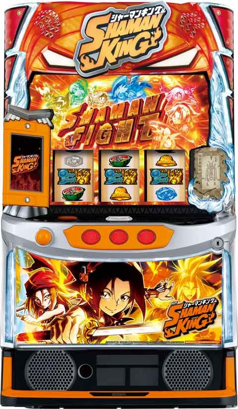
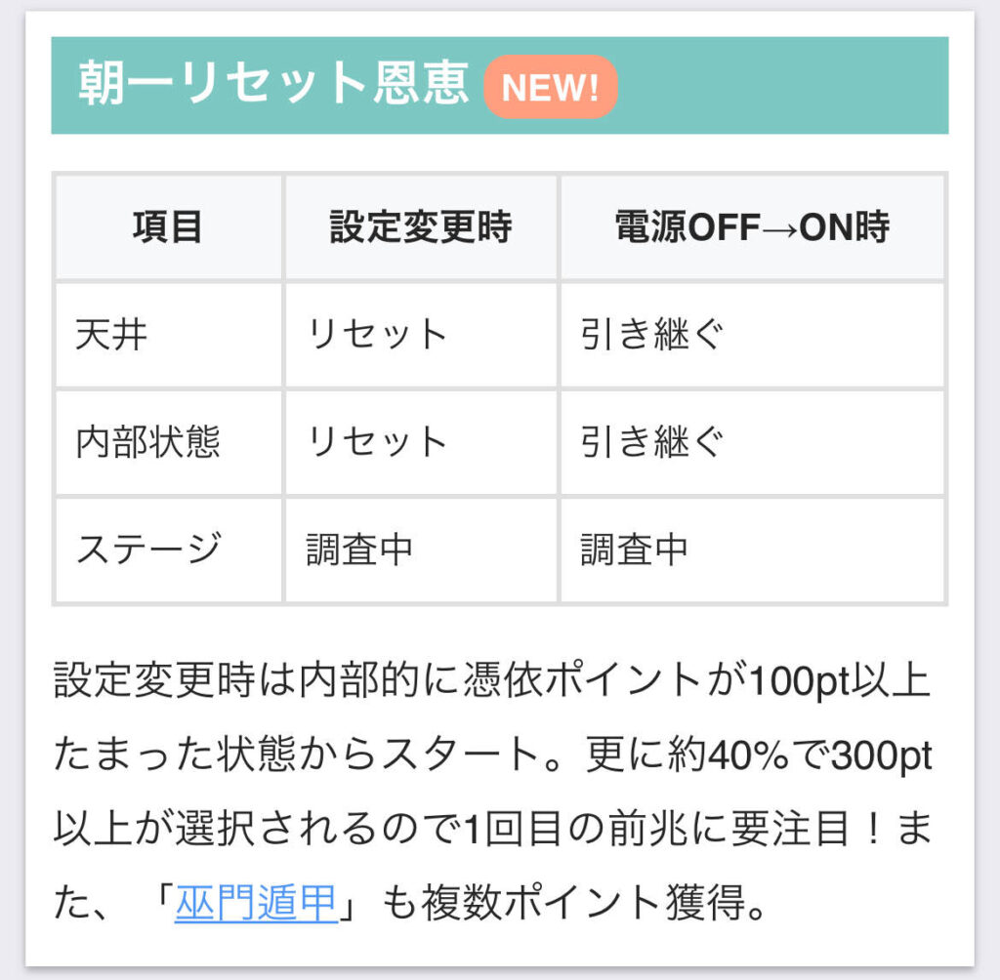
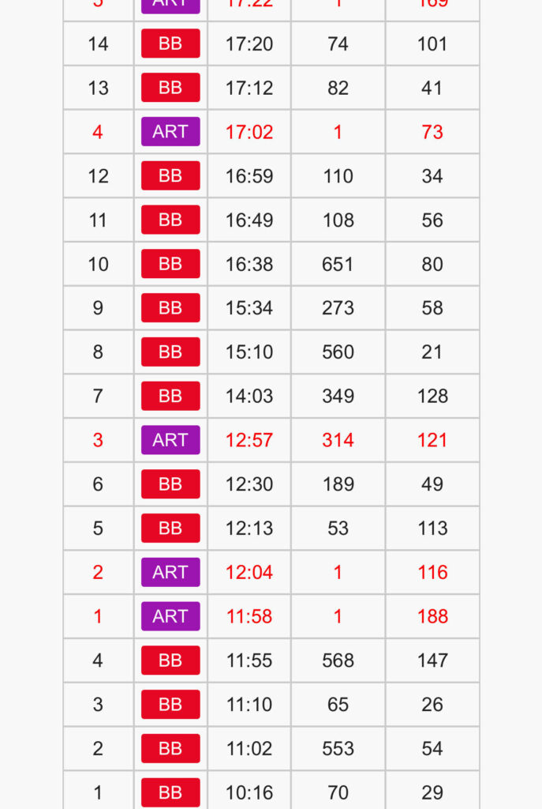
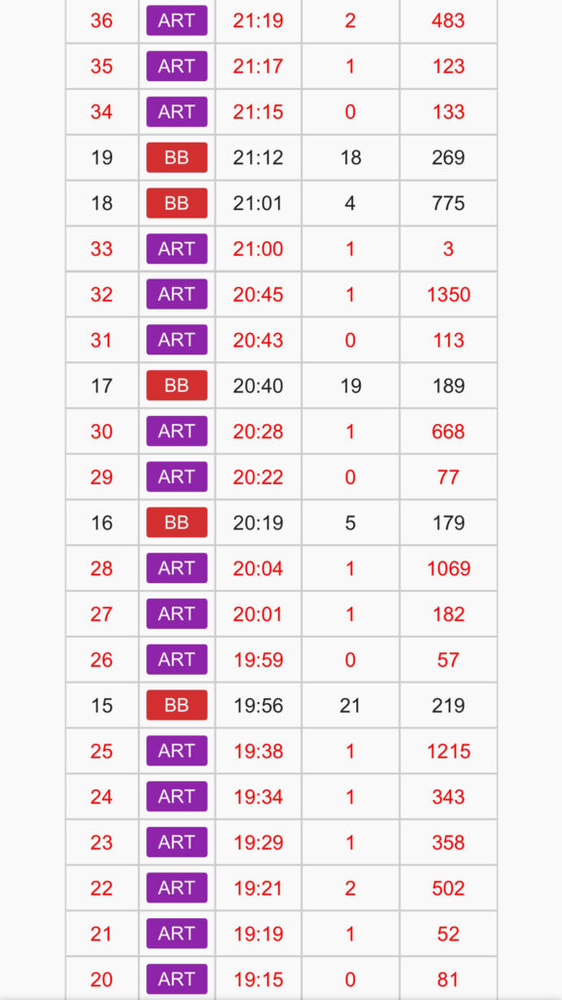
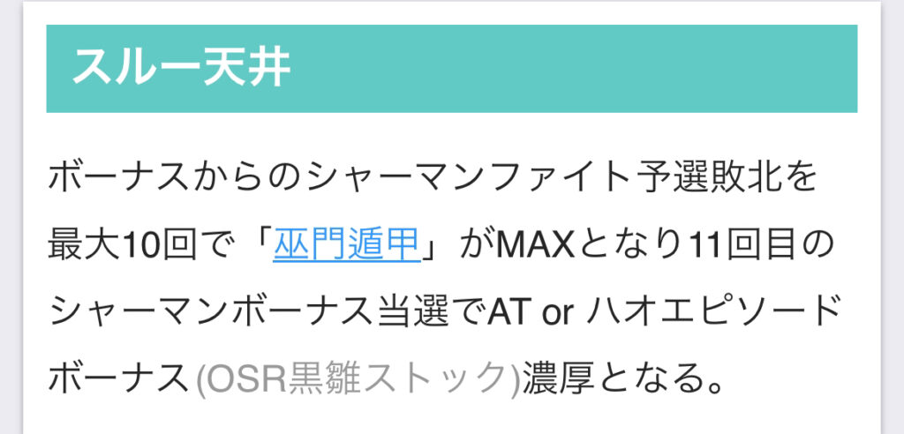
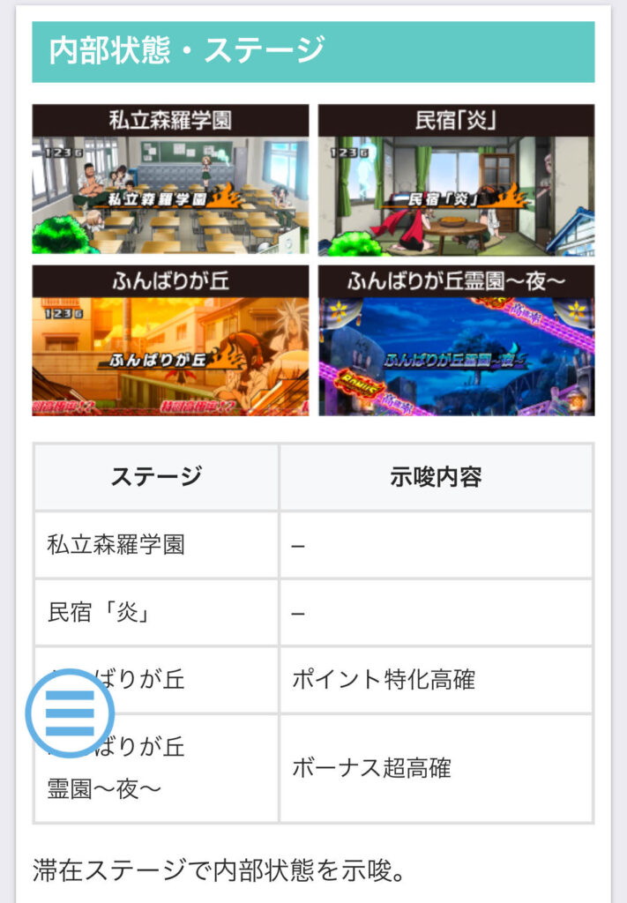
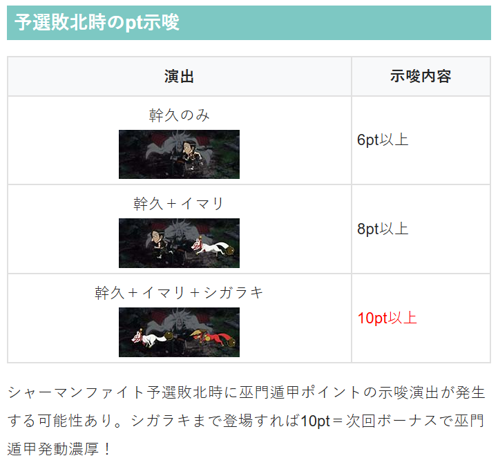

Lシャーマンキング

【天井情報】
800G+α シャーマンボーナス
設定変更時
500G+αに短縮 ポイント天井
最大1000pt+α CZか初当たり当選
スルー天井
シャーマンファイト予選敗北を最大10回で巫門遁甲がMAX。
11回目のシャーマンボーナスでATかハオエピソードボーナス濃厚。
【リセット判別】
ガックン無し
【有利区間について】
差枚等で有利区間リセット時はグレートスピリッツへ突入
有利区間切れ条件
一撃2400枚以上獲得後のAT終了時（差枚マイナスでも） 差枚+2300前後
狙い目
【リセット狙い】
230Gから
※天井が近く憑依ptの影響少ないため憑依ptは不問。

【ボーナス間天井狙い】
520Gから(憑依pt 0pt想定)
【巫門遁甲ポイント狙い】
リセット時、有利区間切断後は累計6スルー(6pt)が天井？
それ以外は累計10スルー(10pt)が天井。
リセット時
積極派 累計4スルー（直近BBからAT非当選）または累計5スルー（直近BBからAT当選）
慎重派 累計5スルー（直近BBからAT非当選）または累計6スルー
有利区間切断後 リセット時と同様？
※有利区間切断の履歴やグラフから明らかに有利切ってる様なケースで。
それ以外 累計9スルーから
累計6スルーの当該(前回BBからAT非当選)は解放率が上がるため単体で狙えそう。
【憑依ポイント狙い】
600ptから
【AT即やめ台狙い】
AT後は必ず鬼特訓(平均400pt）に突入。
差枚プラス時やあと１回当てれば巫門遁甲ポイント狙い出来るなら鬼特訓消化→リプレイ5回引いて前兆消化をしても良さそう？
積極派は差枚プラスならAT後の鬼特訓消化400pt以上でCZ当選まで？
【有利区間切れ狙い】
※履歴から明らかに有利切っていない台で。
差枚+1500枚以上 ＡＴ後の鬼特訓消化。400pt以上でＣＺ当選まで？
差枚+1000枚以上 ＡＴ後の鬼特訓消化。400pt以上で前兆確認？CZ当選まで？
やめ時
ボーナス後 シャーマンファイト予選消化してやめ
AT後 即やめ。または特訓だけ消化して押し引き。
その他
【巫門遁甲ptの計算とpt到達の実例】
BB履歴の1.2.3.5.6はAT非突入。
BB履歴の4はAT突入。
この場合は、
設定変更後 2pt追加
AT非突入 合計5pt
2+5=7ptでMAXに到達し12:57に解放されたと思われる。

【上位ATのサイン（有利切れ？）】
上位ATのサインとして20G前後の履歴が出てくる傾向。
ただ、初当たりの早いボーナスと見分けがつかない可能性あり。

スルー天井



参考元
基本情報
- メーカー: エレコ
- 機械割: 98.0% 〜 114.3%
- 導入開始日: 2025年02月03日（月）
- ゲーム性概要: ●通常時はリプレイ5回成立ごとにCZやボーナス抽選 ●初当りのボーナスからATを目指すゲーム性 ●ATシャーマンファイトは純増2.5枚or4.5枚/Gのバトル型 ●AT継続ごとに上乗せorボーナスor特化ゾーンを抽選 ●最強のトリガー「超占事略決」搭載！


打ち方
打ち方・小役
打ち方（小役狙い）
「最初に狙う絵柄」

左リール上段付近にBARを狙う。
「チェリー中段停止時」 成立役…確定役

「角チェリー停止時」 成立役…弱チェリーor強チェリー

「BAR下段停止時」 成立役…ハズレorリプレイorベルorチャンス目

「スイカ停止時」 成立役…スイカorチャンス目

中リールはBARを目安にスイカを目押し。右リールは白7がスイカの代用となるのでフリー打ちでOKだ。
「レア役の停止形」

「OS絵柄を狙え」

OS絵柄を狙え発生時は、全リールに逆押しでOS絵柄を狙おう。OS絵柄の停止パターンは右or中or左のどこか1箇所に停止もしくは、3つ揃いの2種類（フェイクもある）で、1個停止よりも3つ揃いの方が強い恩恵を得ることができる。
変則押しはNG
通常時、押し順ナビなし時は左リール第1停止での消化を推奨する。
解析情報通常時
小役関連
小役確率
| 役 | 確率 |
|---|---|
| リプレイ | 1/7.3 |
| スイカ | 1/75.4 |
| 弱チェリー | 1/95.7 |
| 強チェリー | 1/327.7 |
| チャンス目 | 1/149.3 |
| 確定役 | 1/16384.0 |
OS絵柄・BAR揃い確率
| 役 | 確率 |
|---|---|
| OS揃い1確揃い役 | 1/8192.0 |
| OS揃い役 | 1/1260.3 |
| 右OS停止役 | 1/109.2 |
| 中OS停止役 | 1/12.2 |
| 左OS停止役 | 1/9.4 |
| 1枚役A（狙えフェイク） | 1/5.0 |
| 通常リプレイ | 1/49.5 |
| OS停止合算 | 1/5.1 |
| OS揃い合算 | 1/1092.3 |
| OS停止＆揃い合算 | 1/5.0 |
| BAR揃い役合算 | 1/2.5 |
フラグごとの停止形
| 役 | 逆押しOSを狙え | BARを狙え |
|---|---|---|
| OS揃い1確揃い役 | 右リール下段OS停止 （揃い1確） | BAR揃い |
| OS揃い役 | 中段にOS揃い | BAR揃い |
| 右OS停止役 | 右リールにOS停止 | BAR揃い |
| 中OS停止役 | 中リールにOS停止 | BAR揃い |
| 左OS停止役 | 左リールにOS停止 | BAR揃い |
| 1枚役A（狙えフェイク） | OS狙えフェイク | BAR揃い |
| 通常リプレイ | リプレイ揃い | BAR狙えフェイク |
BARを狙えはおもにオーバーソウルラッシュ黒雛時に発生する。
ボーナス直撃当選率
シャーマンボーナス高確率（ふんばりが丘霊園〜夜〜）滞在中は、レア役とOS絵柄停止時にシャーマンボーナス直撃を抽選。OS絵柄揃い時はエピソードボーナスが直撃する（OS揃いのフラグが成立すれば必ず揃う）。
シャーマンボーナス高確中・ボーナス直撃当選率
| 役 | ハズレ | フェイク前兆 | ボーナス当選 |
|---|---|---|---|
| 下記以外 | 99.6% | ー | 0.4% |
| OS停止役 | 81.3% | 12.5% | 6.3% |
| OS揃い役 | ー | ー | 100% |
| スイカ・弱チェリー | ー | 66.8% | 33.2% |
| チャンス目 | ー | 25.0% | 75.0% |
| 強チェリー | ー | ー | 100% |
ボーナス高確率中・ボーナス当選期待度
| 設定 | 期待度 |
|---|---|
| 1 | 51.2% |
| 2 | 50.9% |
| 3 | 50.9% |
| 4 | 51.1% |
| 5 | 50.9% |
| 6 | 51.1% |
［通常時］OS絵柄停止時の恩恵まとめ
| 状態 | OS停止 | OS揃い |
|---|---|---|
| ふんばりが丘霊園 ～夜～ | ボーナス抽選 | エピソードボーナス |
| 憑依合体バトル | 2ダメージ＋EX状態 | 非出現 |
| たまおの こっくりさん占い | 報酬1ランクアップ | AT＋超占事略決 （MAX報酬獲得） |
| ヨミの穴 | 憑依合体バトル復帰 | AT＋超占事略決 |
| その他 | 非出現 | 非出現 |
※赤字の箇所は成立＝必ず停止or揃い
［ボーナス中］OS絵柄停止時の恩恵まとめ
| 状態 | OS停止 | OS揃い |
|---|---|---|
| シャーマンボーナス | 対戦相手昇格 | AT |
| シャーマンファイト 予選 | 勝利 | 非出現 |
| その他 | 非出現 | 非出現 |
［AT中］OS絵柄停止時の恩恵まとめ
| 状態 | OS停止 | OS揃い |
|---|---|---|
| シャーマンファイト | OSR抽選 | OSR |
| 連撃チャンス | OSR抽選 （右停止は成立＝OSR） | OSR黒雛 |
| ジャンヌステージ | OSR | 非出現 |
| ウイニングジャッジ | 報酬獲得＋AT継続 | 特殊報酬 |
| ファイナルアタック | ゲーム数上乗せ | ＋100G以上 |
| OSR | ゲーム数リセット | ＋50G以上 |
| グレートスピリッツ | 報酬1ランクアップ | MAX報酬獲得 |
| その他 | 非出現 | 非出現 |
※赤字の箇所は成立＝必ず停止or揃い ※特殊報酬…OSR黒雛or超占事略決or恐山ボーナス ※OSR…オーバーソウルラッシュ
AT直撃当選率
通常時のOS揃い役成立時に、AT直撃を抽選。通常時は基本的にOS揃いが出現しない（ナビが出ずにリプレイが揃う）ので、見た目上はリプレイを契機にAT直撃となる。
ふんばりが丘霊園〜夜〜（シャーマンボーナス高確）・ヨミの穴中はOS揃い役成立＝必ず停止。たまおのこっくりさん占い中は成立時の一部で停止するが、AT直撃ではなくそれぞれのタイミングに応じた恩恵を獲得できる。
内部状態関連
シャーマンボーナス高確

おもに弱チェリーやスイカで移行するシャーマンボーナスの高確率状態。20Gの保証ゲーム数があり、20G消化後から転落が抽選される。
特訓高確
リプレイと弱チェリー成立時に移行する可能性がある、アンナの地獄特訓の高確率状態。継続ゲーム数は10Gor20Gで、ゲーム数が0になると通常へ転落する。

特訓高確移行率
| 継続ゲーム数 | リプレイ | 弱チェリー |
|---|---|---|
| 10G | 0.8% | 50.0% |
| 20G | 0.4% | 12.5% |
| トータル | 1.2% | 62.5% |
憑依ポイント
憑依ポイント概要

通常時はハズレ・ベル・レア役で憑依ポイントを貯めていき、 リプレイが5回成立するごとに前兆へ移行して、ポイントを参照してCZ以上を抽選 。 ポイントはCZやボーナス当選までリセットされず、MAXの1000pt到達でCZ以上濃厚となる。 シャーマンボーナス後とAT後はアンナの地獄鬼特訓から始まるので、200G以内のボーナス当選期待度は約50%と高い。
憑依ポイント性能
| 項目 | 内容 |
|---|---|
| ポイント獲得契機 | ハズレ・ベル・レア役・ 小鬼レベル・アンナの地獄特訓 |
| CZ以上抽選契機 | リプレイ5回成立時 |
| 最大ポイント | 1000pt （CZ以上当選でポイントがリセット） |
| その他 | 400pt以上貯まっていれば機械割102%以上 |
サブ液晶の表示内容
| サブ液晶 | 内容 |
|---|---|
| ロウソク | リプレイの成立回数 |
| 憑依ポイント | 現在のポイント数 |
| 小鬼レベル | 小鬼のアクション（色）で小鬼レベルを示唆 |
小鬼レベルはおもにリプレイが連続したタイミングでアップ（小鬼のアクションが変化）し、リプレイ5回成立時に憑依ポイントが加算される。
憑依ポイント別・CZ以上期待度（設定1）
| ポイント | 期待度 |
|---|---|
| 0～195pt（白） | 19.6% |
| 200～395pt（青） | 24.4% |
| 400～595pt（黄） | 28.6% |
| 600～795pt（緑） | 41.0% |
| 800～995pt（赤） | 70.1% |
| 1000pt | 100% |
※抽選はリプレイ5回成立時。前兆中の昇格も含む期待度
フェイク前兆中はレア役で本前兆への書き換えが抽選されていて、強レア役なら50%以上で当選。 フェイク前兆中のリプレイや書き換え非当選のレア役では内部的に憑依ポイント獲得が抽選され、通常時に戻ったタイミングで加算される。
憑依ポイント獲得率
| ポイント | ハズレ目・ 共通ベル | スイカ・ 弱チェリー | チャンス目・ 強チェリー |
|---|---|---|---|
| 5pt | 9.4% | ー | ー |
| 10pt | 0.4% | ー | ー |
| 20pt | ー | 89.8% | 79.7% |
| 30pt | ー | 7.8% | 15.6% |
| 50pt | ー | 1.6% | 3.1% |
| 100pt | ー | 0.8% | 1.6% |
設定変更時・初期憑依ポイント振り分け
| ポイント | 振り分け |
|---|---|
| 100pt | 30.1% |
| 200pt | 30.1% |
| 300pt | 18.8% |
| 400pt | 9.4% |
| 500pt | 7.0% |
| 600pt | 3.1% |
| 700pt | 1.6% |
設定変更時・初期リプレイ回数振り分け
| 回数 | 振り分け |
|---|---|
| 0回 | 50.0% |
| 1回 | 37.5% |
| 2回 | 12.5% |
設定変更時は内部的に100pt以上を持ってスタート。 40%以上で300pt以上 が選択される。 リプレイ回数も内部的に加算されているケースがあるので、見た目上、ロウソクが5本点灯する前に前兆へ移行するケースがある。
小鬼レベルの昇格契機
| No. | 契機 |
|---|---|
| 1 | リプレイの連続成立時 |
| 2 | 内部的なリプレイカウンタが 1以上のタイミングでのリプレイ成立時 |
小鬼レベル（エフェクトの色）別 加算憑依ポイント振り分け
| ポイント | 青 | 黄 | 緑 |
|---|---|---|---|
| 5pt | 84.4% | ー | ー |
| 10pt | 3.1% | ー | ー |
| 20pt | 3.1% | 60.2% | ー |
| 30pt | 3.1% | 25.0% | ー |
| 50pt | 3.1% | 10.2% | 61.3% |
| 100pt | 3.1% | 3.1% | 33.2% |
| 200pt | ー | 1.6% | 3.1% |
| 300pt | ー | ー | 1.6% |
| 500pt | ー | ー | 0.8% |
| AT当選 | ー | ー | ー |
| ポイント | 赤 | 紫 | 虹 |
| 5pt | ー | ー | ー |
| 10pt | ー | ー | ー |
| 20pt | ー | ー | ー |
| 30pt | ー | ー | ー |
| 50pt | ー | ー | ー |
| 100pt | 50.0% | ー | ー |
| 200pt | 34.4% | 56.3% | ー |
| 300pt | 12.5% | 25.0% | ー |
| 500pt | 3.1% | 18.8% | ー |
| AT当選 | ー | ー | 100% |
小鬼レベルに応じて 前兆開始時（リプレイ5回成立時）に憑依ポイントが加算 されるので、小鬼レベルが上がっているほど前兆移行時の期待度が高まる仕組みだ。
「規定リプレイカウンタ」 前兆終了後・アンナの地獄特訓終了後・CZ（ヨミノ穴含む）終了後・シャーマンファイト予選敗北後の リプレイ成立時に規定リプレイカウンタを抽選 。 カウンタは1・10・99の3パターンで、基本的には1が選択される。カウンタは毎ゲーム1ずつ減算されていき、 1以上のタイミングでリプレイを引くと必ず小鬼レベルが昇格 する。
規定リプレイカウンタ振り分け
カウンタの最大値は99で1Gに1ずつ減っていくため、最大で100G間、リプレイを引くたびに小鬼レベルが昇格する可能性がある。カウンタが1の場合は次ゲームで終了。リプレイ1回で小鬼レベルが上がればカウンタ1以上が濃厚となる。
600～1000pt
600pt以上だとたまおのこっくりさん占いが選択されやすくなる。
アンナの地獄特訓
アンナの地獄特訓概要

通常時のレア役を契機に突入する憑依ポイント獲得の特化ゾーン。1セット5G継続で、最終ゲームでリプレイかレア役が成立すればもう1セット継続する。 上位版の鬼特訓なら、大量ポイント獲得に期待できる。
アンナの地獄特訓性能
| 項目 | 内容 |
|---|---|
| 当選契機 | レア役成立時の抽選、 シャーマンボーナス後やAT終了後（鬼特訓） |
| 継続ゲーム数 | 5G/セット |
| 消化中の抽選 | 成立役に応じて憑依ポイントを抽選 （毎ゲーム10pt以上） |
| 平均獲得ポイント | 170pt（鬼特訓は400pt） |
| その他 | 最終ゲームにリプレイorレア役成立でもう1セット |
「アンナの地獄鬼特訓」

シャーマンボーナス後やAT終了後は必ず鬼特訓に突入する。
アンナの地獄特訓当選率（設定1）
| 役 | 低確中 | 高確中 |
|---|---|---|
| スイカ | 6.3% | 25.0% |
| 弱チェリー | 6.3% | 25.0% |
| チャンス目 | 25.0% | 100% |
| 強チェリー | 100% | 100% |
特訓種別振り分け
| 種別 | その他 | シャーマンファイト予選や AT終了後 |
|---|---|---|
| 通常特訓 | 94.9% | ー |
| 鬼特訓 | 5.1% | 100% |
シャーマンファイト予選終了後・AT終了後は必ず鬼特訓に突入する。
獲得憑依ポイント振り分け 特訓
| ポイント | その他 | 押し順ベル OS揃い役 | スイカ 弱チェリー | チャンス目 | 強チェリー |
|---|---|---|---|---|---|
| 10pt | 50.0% | 62.1% | ー | ー | ー |
| 20pt | ー | ー | ー | ー | ー |
| 30pt | 25.0% | 22.3% | ー | ー | ー |
| 50pt | 25.0% | 12.5% | 43.0% | ー | ー |
| 100pt | ー | 2.0% | 37.5% | 43.8% | ー |
| 200pt | ー | 0.4% | 12.5% | 25.0% | 50.0% |
| 300pt | ー | 0.4% | 4.7% | 25.0% | 25.0% |
| 500pt | ー | 0.4% | 2.3% | 6.3% | 25.0% |
鬼特訓
| ポイント | その他 | 押し順ベル OS揃い役 | スイカ 弱チェリー | チャンス目 | 強チェリー |
|---|---|---|---|---|---|
| 10pt | ー | ー | ー | ー | ー |
| 20pt | ー | ー | ー | ー | ー |
| 30pt | 37.5% | 37.5% | ー | ー | ー |
| 50pt | 37.5% | 37.5% | ー | ー | ー |
| 100pt | 18.8% | 18.8% | 80.5% | ー | ー |
| 200pt | 4.7% | 4.7% | 12.5% | 68.8% | ー |
| 300pt | 0.8% | 0.8% | 4.7% | 25.0% | 75.0% |
| 500pt | 0.8% | 0.8% | 2.3% | 6.3% | 25.0% |
鬼特訓は毎ゲーム30pt以上を獲得できる。
憑依合体バトル（CZ）
憑依合体バトル概要

1セット6GのST型CZ。小役揃いで敵にダメージを与え、STが再セットされる。対戦相手のHPを0にできれば勝利濃厚、6G消化後は残りHPを参照して勝利抽選がおこなわれる。
憑依合体バトル性能
| 項目 | 内容 |
|---|---|
| 当選契機 | リプレイ5回ごとの抽選の一部 |
| 継続ゲーム数 | 6G/セットのST型 |
| 消化中の抽選 | 小役成立でダメージを与え6Gを再セット |
| 平均勝利期待度 | 約45% |
| その他 | OS絵柄停止でEX状態へ |
「対戦相手で期待度が変化」

対戦相手ごとのトータル勝利期待度
※ヨミの穴での引き戻しも考慮したトータル期待度
ST中にHPを0にできる期待度
| 対戦相手 | 期待度 |
|---|---|
| VS蓮 | 18.9% |
| VS潤 | 28.1% |
| VS竜之介 | 42.3% |
「EX状態」

狙えカットイン発生時にOS絵柄が停止すれば、与えるダメージが2pt以上にアップしたEX状態へ移行する。
ヨミの穴

憑依合体バトル失敗時の一部で移行するCZの引き戻しゾーンで、 対戦相手のHPを多く残っているほど突入しやすい 。引き戻し成功時は対戦相手の残りHPを引き継ぎ＆EX状態で復帰する。 レアケースだが、ヨミの穴中にOS絵柄が揃えばAT直行＋超占事略決も濃厚となる。
ヨミの穴性能
| 項目 | 内容 |
|---|---|
| 当選契機 | 憑依合体バトル失敗時の一部 |
| 継続ゲーム数 | 5G |
| 消化中の抽選 | 全役でCZ引き戻し抽選、 レア役、OS絵柄停止は引き戻し濃厚 |
| 引き戻し期待度 | 約73% |
| その他 | OS絵柄揃いはAT直行＋超占事略決 |
与ダメージ振り分け
| ダメージ | 共通ベル | 通常リプレイ | 左or右 OS停止役 | 中OS停止役 |
|---|---|---|---|---|
| 1pt | 99.2% | 100% | 98.4% | ー |
| 2pt | 0.4% | ー | 1.6% | 1.6% |
| 3pt | 0.4% | ー | ー | ー |
| 8pt | ー | ー | ー | ー |
| ダメージ | スイカ・ 弱チェリー | チャンス目 | 強チェリー | OS揃い役 |
| 1pt | 50.0% | ー | ー | 87.5% |
| 2pt | 48.4% | 87.5% | ー | ー |
| 3pt | 1.6% | 12.5% | 100% | ー |
| 8pt | ー | ー | ー | 12.5% |
※中OS停止役は成立時の1.6%でOS絵柄が停止して、2ダメージを与える。OS揃い役は12.5%を引いた場合に狙え→3つ揃いとなる
OS絵柄停止後のEX状態中は、上表の抽選で獲得したダメージに＋1される。
残りHPごとの勝利期待度
STで対戦相手のHPを0にできなかった場合、残りHPを参照して勝利抽選をおこなう。 残りHPが少ないほど勝利期待度が高く、高設定ほど残りHPが多い状態でも勝利しやすい。
憑依合体バトル失敗時・移行先振り分け
| 与えたダメージ | ヨミの穴 | アンナの地獄特訓 |
|---|---|---|
| 0～1 | 25.0% | 75.0% |
| 2～3 | 12.5% | 87.5% |
| 4～5 | 0.8% | 99.2% |
| 6～7 | 0.4% | 99.6% |
与えたダメージが少ないほどヨミの穴へ移行しやすい。
CZ1回あたりの与ダメージ量の分布
| ダメージ | VS蓮 | VS潤 | VS竜之介 |
|---|---|---|---|
| 0 | 21.3% | 21.3% | 21.4% |
| 1 | 14.9% | 14.9% | 14.8% |
| 2 | 12.0% | 12.0% | 11.9% |
| 3 | 9.6% | 9.6% | 9.6% |
| 4 | 7.9% | 7.8% | ー |
| 5 | 6.3% | 6.3% | ー |
| 6 | 5.1% | ー | ー |
| 7 | 4.1% | ー | ー |
| 勝利 | 18.9% | 28.1% | 42.3% |
※ヨミの穴経由で復帰した場合を除く、バトル1回あたりの分布
たまおのこっくりさん占い（CZ）
たまおのこっくりさん占い概要

10Gの報酬アップ型CZ。成立役に応じてボーナス抽選がおこなわれ、ボーナス確定後はAT抽選、AT確定後は超占事略決を抽選する。
たまおのこっくりさん占い性能
| 項目 | 内容 |
|---|---|
| 当選契機 | 周期抽選の一部 |
| 継続ゲーム数 | 10G |
| 消化中の抽選 | リプレイ・レア役・OS絵柄でボーナス抽選、 ボーナス当選後は恩恵の昇格抽選 |
| ボーナス以上期待度 | 約60% |
| その他 | 報酬が超占事略決に到達した時点でCZは終了 |
たまおのこっくりさん占い成功時の獲得報酬割合
| 設定 | ボーナス | AT | 超占事略決 |
|---|---|---|---|
| 1 | 90.2% | 9.3% | 0.5% |
| 2 | 90.5% | 9.1% | 0.4% |
| 3 | 90.4% | 9.1% | 0.5% |
| 4 | 90.5% | 9.0% | 0.4% |
| 5 | 90.4% | 9.2% | 0.4% |
| 6 | 90.5% | 9.1% | 0.4% |
ボーナス当選率（初回報酬獲得率）
| 役 | 当選率 |
|---|---|
| 通常リプレイ | 6.3% |
| OS停止役 | 33.2% |
| OS揃い役 | 3.1% |
| スイカ・弱チェリー | 50.0% |
| チャンス目・強チェリー | 100% |
巫門遁甲ポイント
巫門遁甲ポイント概要
設定変更時・有利区間移行時・シャーマンファイト予選敗北時に獲得するポイントで、 10pt到達後のボーナス当選時に巫門遁甲が発動。発動時の恩恵はAT直行orハオのエピソードボーナス のいずれかだ。 シャーマンファイト予選敗北時に1pt以上を必ず獲得するため、最大11回目のシャーマンボーナス当選で巫門遁甲の発動濃厚。設定変更時は4pt以上を持っているので、シャーマンボーナス10回以内に巫門遁甲が発動する。
巫門遁甲ポイント性能
| 項目 | 内容 |
|---|---|
| 初期ポイント | ● 設定変更時…4pt以上 ● 有利区間移行時…1pt以上 |
| ポイント獲得契機 | ● シャーマンファイト予選敗北時に1pt以上獲得 |
| 10pt獲得後 | ● ボーナス当選時に巫門遁甲が発動 ● 恩恵はAT直行orハオのエピソードボーナス |
［ループ抽選あり］ 巫門遁甲発動時は内部的にループ抽選がおこなわれ、当選すると 約80%で巫門遁甲がループ （初回の巫門遁甲発動時のループ抽選に受かれば約80%でループストック抽選→当選した分だけ巫門遁甲が発動）。
ループ中は憑依合体バトルで必ず勝利するため、巫門遁甲発動後はATが終了しても次の憑依合体バトル敗北まで打つことをオススメだ。
ただし、勝利濃厚となるのは憑依合体バトルのみで、たまおのこっくりさん占いは失敗の可能性あり。
巫門遁甲ポイントMAX時の恩恵振り分け
| 恩恵 | 振り分け |
|---|---|
| AT直撃 | 99.2% |
| ハオのエピソードボーナス | 0.8% |
※巫門遁甲ループ発動中も振り分けは共通
獲得巫門遁甲ポイント振り分け
| ポイント | 設定変更時 | シャーマンファイト予選敗北時 |
|---|---|---|
| 1pt | ー | 96.9% |
| 2pt | ー | 2.3% |
| 3pt | ー | ー |
| 4pt | 79.3% | ー |
| 5pt | 7.8% | 0.8% |
| 6pt | 7.8% | ー |
| 7pt | 3.1% | ー |
| 8pt | 1.6% | ー |
| 9pt | 0.4% | ー |
| 10pt | ー | ー |
設定変更時は4〜9ptから抽選。シャーマンファイト予選敗北時は1・2・5ptのいずれかを獲得する。
前兆
CZフェイク前兆中の書き換え当選率
| 役 | 当選率 |
|---|---|
| スイカ・弱チェリー | 6.3% |
| チャンス目 | 50.0% |
| 強チェリー | 75.0% |
当選すればCZ本前兆に書き換えられる。
演出動画
ロングフリーズ
確定役の一部で発生。ハオのエピソードボーナス（オーバーソウルラッシュ黒雛突入）＋超占事略決からATがスタートする。
フリーズ
ロングフリーズ


確定役成立時の一部でロングフリーズが発生。ハオのエピソードボーナス＋超占事略決スタートと、恩恵は超強力だ。
ロングフリーズ性能
| 項目 | 内容 |
|---|---|
| 発生契機 | 確定役成立時の一部 |
| 恩恵 | ハオのエピソードボーナス＋超占事略決 |
解析情報ボーナス時
ボーナス
シャーマンボーナス概要

初当りのメインとなる擬似ボーナスで、消化中は成立役に応じてボーナス後に突入するシャーマンファイト予選の対戦相手昇格を抽選する。
シャーマンボーナス性能
| 項目 | 内容 |
|---|---|
| 継続ゲーム数 | 30G |
| 1Gあたりの純増 | 約2.5枚 |
| 消化中の抽選 | レア役やOS絵柄停止時に、 シャーマンファイト予選の対戦相手昇格を抽選 |
「告知タイプの選択」

告知タイプ
| タイプ | 特徴 |
|---|---|
| チャンス告知 | レア役成立時に昇格の当否を告知、 OS絵柄停止時は昇格濃厚、OS揃いはAT濃厚 |
| ランクアップ告知 | ランクが上がるほど昇格の期待度がアップ |
| イントロMV | 告知・示唆が存在しない |
ボーナス開始時、サブ液晶で3種類の告知タイプを任意に選択できる。
エピソードボーナス概要

AT＋オーバーソウルラッシュ突入が濃厚 の ボーナスで、消化中はレア役でATゲーム数の上乗せを抽選。エピソードボーナスに対応したキャラ（ホロホロのエピソードならホロホロ）がオーバーソウルラッシュに参戦する。
エピソードボーナス性能
| 項目 | 内容 |
|---|---|
| 継続ゲーム数 | 40G |
| 1Gあたりの純増 | 約2.5or5.4枚 |
| 消化中の抽選 | レア役でATゲーム数上乗せを抽選 |
| 終了後 | オーバーソウルラッシュへ |
エピソードボーナスの種類と恩恵
| 種類 | 恩恵 |
|---|---|
| 葉 | デフォルト（AT濃厚） |
| 蓮 | OSRに蓮が参戦 |
| チョコラブ | OSRにチョコラブが参戦 |
| ホロホロ | OSRにホロホロが参戦 |
| リゼルグ | OSRにリゼルグが参戦 |
| ハオ | OSR黒雛突入 |
※OSR…オーバーソウルラッシュ
「グレートスピリッツ経由のエピソードボーナス」 本来は、ホロホロのエピソードならホロホロのみがオーバーソウルラッシュに参戦というように、発生エピソードに対応したキャラが参戦。 ただし、エンディング後のグレートスピリッツで獲得するエピソードボーナスは、AT引き戻し→葉→蓮→チョコラブ→ホロホロ→リゼルグ→アンナの順にランクが上がっていき、 獲得したエピソードよりも下のキャラがすべて参戦 するので、リゼルグまで到達すればオーバーソウルラッシュに全キャラが参戦することになる（アンナまで到達時は全員参戦＋アンナモード）。
※エピソードボーナス中のレア役で獲得した上乗せ分は、AT中の与ダメージとはならない
恐山ル・ヴォワール（恐山ボーナス）概要

AT中のみ当選する可能性がある、上乗せ特化ボーナス。レア役は上乗せ濃厚、ベルでも高確率で上乗せが発生するため、平均で300Gの上乗せを獲得できる。
恐山ボーナス性能
| 項目 | 内容 |
|---|---|
| 継続ゲーム数 | 100G |
| 1Gあたりの純増 | 約2.5or5.4枚 |
| 消化中の抽選 | レア役でATゲーム数上乗せ濃厚、 ベルでも高確率で上乗せが発生 |
| 平均上乗せゲーム数 | 300G |
| 期待獲得枚数 | 約3500枚 |
※恐山ボーナス中のレア役で獲得した上乗せ分は、AT中の与ダメージとはならない
ボーナス準備中

ボーナス準備中のレア役では、エピソードボーナスへの昇格抽選とオーバーソウルラッシュ抽選がおこなわれる。 ×・？・？ナビを消化後したタイミングで巫門遁甲ポイントが10pt以上貯まっていた場合、巫門遁甲が発動してAT直行orハオのエピソードボーナスのいずれかを獲得する。
初当りボーナス種別振り分け
※確定役契機や準備中のレア役での昇格を除いた振り分け
シャーマンボーナスorエピソードボーナスは、当選時の設定に応じた振り分けで変化する。 この振り分け以外でも、設定不問で確定役成立時はエピソードボーナス濃厚。準備中はレア役でエピソードボーナスへの昇格抽選がおこなわれる。
［エピソードボーナス中］ATゲーム数上乗せ当選率
| 上乗せ | スイカ | 弱チェリー | チャンス目 | 強チェリー |
|---|---|---|---|---|
| テーブル2 | ー | 50.0% | 75.0% | ー |
| テーブル3 | 25.0% | ー | 25.0% | 75.0% |
| テーブル4 | ー | ー | ー | 25.0% |
| テーブル5 | ー | ー | ー | ー |
| テーブル6 | ー | ー | ー | ー |
| トータル | 25.0% | 50.0% | 100% | 100% |
エピソードボーナス中は強レア役を引けば必ず上乗せ。
［恐山ボーナス中］ATゲーム数上乗せ当選率
| 上乗せ | ベル | スイカ | 弱チェリー | |
|---|---|---|---|---|
| テーブル1 | 62.5% | ー | ー | |
| テーブル2 | 6.3% | ー | 100% | |
| テーブル3 | ー | 100% | ー | |
| テーブル4 | ー | ー | ー | |
| テーブル5 | ー | ー | ー | |
| テーブル6 | ー | ー | ー | |
| トータル | 68.8% | 100% | 100% | |
| 上乗せ | チャンス目 | 強チェリー | ||
| テーブル1 | ー | ー | ||
| テーブル2 | ー | ー | ||
| テーブル3 | 75.0% | ー | ||
| テーブル4 | 25.0% | 75.0% | ||
| テーブル5 | ー | 25.0% | ||
| テーブル6 | ー | ー | ||
| トータル | 100% | 100% |
恐山ボーナス中はベルでも7割弱で上乗せ、レア役は上乗せ濃厚だ。
テーブルごとの上乗せゲーム数
| テーブル | 上乗せ |
|---|---|
| テーブル1 | ＋5G以上 |
| テーブル2 | ＋10G以上 |
| テーブル3 | ＋20G以上 |
| テーブル4 | ＋30G以上 |
| テーブル5 | ＋50G以上 |
| テーブル6 | ＋100G以上 |
シャーマンボーナス中の対戦相手昇格抽選
シャーマンボーナス中は終了後のシャーマンファイト予選の対戦相手昇格を抽選。ファウスト→蓮→ホロホロ→ATの順に昇格していき、ATまで昇格した後はATのゲーム数上乗せが抽選される。
シャーマンファイト予選の対戦相手昇格当選率 現在の対戦相手：ファウストor蓮
| 役 | 1段階昇格 | AT濃厚 |
|---|---|---|
| OS停止役 | 4.7% | ー |
| OS揃い役 | ー | 1.6% |
| スイカ・弱チェリー | 10.2% | ー |
| 強チェリー | 100% | ー |
| チャンス目 | 50.0% | ー |
現在の対戦相手：ホロホロ
| 役 | 1段階昇格 | AT濃厚 |
|---|---|---|
| OS停止役 | ー | 1.6% |
| OS揃い役 | ー | 1.6% |
| スイカ・弱チェリー | ー | 5.1% |
| 強チェリー | ー | 100% |
| チャンス目 | ー | 33.2% |
OS停止・揃いは成立時にカットイン発生→停止・揃う期待度
AT当選後のゲーム数上乗せ抽選値はエピソードボーナス中と共通だ。
シャーマンファイト予選
シャーマンファイト予選概要

シャーマンボーナス終了後は、ATをかけたシャーマンファイト予選へ移行。継続ゲーム数は7Gで、OS絵柄が止まれば勝利＝AT突入となる。
シャーマンファイト予選性能
| 項目 | 内容 |
|---|---|
| 突入契機 | シャーマンボーナス後 |
| 継続ゲーム数 | 7G |
| 消化中の抽選 | OS絵柄停止でAT濃厚、 最終ゲームのレア役はAT濃厚 |
対戦相手ごとの勝利期待度（設定1）
| 対戦相手 | 期待度 |
|---|---|
| ファウスト | 35.6% |
| 蓮 | 50.9% |
| ホロホロ | 80.3% |
| トータル | 44.7% |
［リールロック］

2〜6G目は毎ゲームでショートロックが発生し、2段階目に到達すればOS絵柄を狙えが発生。OS絵柄が止まれば勝利＝AT当選となる。最終の7G目はレア役成立で勝利濃厚。
1段階目で終了とみせかけて、リール停止時にロックが発生する逆転パターンも存在する。
シャーマンファイト予選中のAT当選率（1～6G目） VSファウスト
| 設定 | その他 | OS停止役 OS揃い役 | スイカ 弱チェリー | チャンス目 強チェリー |
|---|---|---|---|---|
| 1 | 0.4% | 20.7% | 25.0% | 100% |
| 2 | 0.4% | 21.1% | 25.0% | 100% |
| 3 | 0.4% | 21.9% | 25.0% | 100% |
| 4 | 0.8% | 23.4% | 25.0% | 100% |
| 5 | 0.8% | 25.0% | 25.0% | 100% |
| 6 | 0.8% | 26.6% | 25.0% | 100% |
VS蓮
| 設定 | その他 | OS停止役 OS揃い役 | スイカ 弱チェリー | チャンス目 強チェリー |
|---|---|---|---|---|
| 1 | 0.4% | 39.8% | 37.5% | 100% |
| 2 | 0.4% | 40.6% | 37.5% | 100% |
| 3 | 0.4% | 42.2% | 37.5% | 100% |
| 4 | 0.8% | 46.1% | 37.5% | 100% |
| 5 | 0.8% | 49.2% | 37.5% | 100% |
| 6 | 0.8% | 53.1% | 37.5% | 100% |
VSホロホロ
| 設定 | その他 | OS停止役 OS揃い役 | スイカ 弱チェリー | チャンス目 強チェリー |
|---|---|---|---|---|
| 1 | 5.1% | 81.3% | 75.0% | 100% |
| 2 | 5.1% | 81.3% | 75.0% | 100% |
| 3 | 5.1% | 81.3% | 75.0% | 100% |
| 4 | 5.1% | 81.3% | 75.0% | 100% |
| 5 | 5.1% | 81.3% | 75.0% | 100% |
| 6 | 5.1% | 81.3% | 75.0% | 100% |
シャーマンファイト予選中のAT当選率（7G目） 対戦相手不問
| 設定 | その他 | OS停止役 OS揃い役 | スイカ 弱チェリー | チャンス目 強チェリー |
|---|---|---|---|---|
| 不問 | 2.7% | 2.7% | 100% | 100% |
確定役は勝利かつ、オーバーソウルラッシュ黒雛も濃厚になる。 最終ゲーム（7G目）はリールロック経由の狙えが発生しないため、内部的にOS停止役などが成立してもその他と同じ扱いで抽選。その分、対戦相手不問で弱レア役でもAT濃厚だ。
シャーマンファイト（AT）
シャーマンファイト概要

初期ゲーム数40Gのバトル型AT。 上乗せしたゲーム数との対戦相手へのダメージ量がリンク しているのが大きな特徴で、対戦相手のHP分のゲーム数を上乗せできれば勝利濃厚となる。 勝利後はウイニングジャッジで報酬を獲得して次のセットへ移行、勝利できずにATゲーム数を消化した場合はファイナルアタックでATへの復帰を目指す。
シャーマンファイト性能
| 項目 | 内容 |
|---|---|
| 突入契機 | シャーマンファイト予選突破後、通常時の直撃、 エピソードボーナス後、 たまおのこっくりさん占いの一部、 グレートスピリッツでの引き戻し時 |
| 継続ゲーム数 | 初期40G |
| 1Gあたりの純増 | 約2.5枚（超占事略決中は5.4枚） |
| 消化中の抽選 | 内部状態昇格、連撃チャンスモード昇格、 連撃チャンス、ゲーム数上乗せ、特化ゾーン |
| 初当り時期待獲得枚数 | 約810枚 |
| その他 | 初当り時は連撃チャンスモード優遇、 3の倍数セットはHP30以下の相手を選択 |
AT中のおもな抽選内容
| 抽選 | 契機 |
|---|---|
| 内部状態昇格 | リプレイ、スイカ |
| 連撃チャンスモード昇格 | リプレイ |
| 連撃チャンス | ベル |
| ゲーム数上乗せ | OS絵柄、レア役 |
| 特化ゾーン | OS絵柄、レア役 |
「対戦カード決定」

対戦相手ごとにHPと勝利時の恩恵の期待度が変化。味方キャラは基本的に葉だが、味方キャラが参戦した場合は連撃チャンスの上乗せ性能が変化する（連撃特性によって参戦するキャラが変化）。
対戦相手の特徴
| 対戦相手 | HP | 勝利時の恩恵 |
|---|---|---|
| サティ | 80 | ● OSR以上濃厚 ● 約25%で超占事略決or恐山ボーナス |
| ラキスト/シルバ | 70 | ● 上乗せ30G以上 ● HP60の相手よりOSRに期待 |
| アナテル/花組 | 60 | ● 上乗せ30G以上 ● HP30の相手よりOSRに期待 |
| ピノ/BōZ | 30 | ● 上乗せ20G以上 |
| ドリームマッチ | 20 | ● OSR以上 |
| オパチョ | 10 | ● 25%以上でエピソードボーナス以上 ● 次の対戦相手も約60%でオパチョ |
※OSR…オーバーソウルラッシュ
AT突入セットと3の倍数セットはHP30以下のキャラが選択される。
ドリームマッチの組み合わせ一覧
| No. | 味方 | 対戦相手 |
|---|---|---|
| 1 | 麻倉葉 | 麻倉幹久 |
| 2 | 蓮 | 潤＆李白竜 |
| 3 | ホロホロ | 梅宮竜之介 |
| 4 | チョコラブ | パスカル・アバフ |
| 5 | リゼルグ | マルコ |
| 6 | 恐山アンナ | 玉村たまお |
ドリームマッチ時は当該セットの味方キャラに対応した対戦相手が選択される。
「上乗せ＝ダメージ」

5G上乗せで5ダメージのように、獲得した上乗せとダメージがリンクしている。


ATゲーム数消化後に移行し、OS絵柄を狙えが発生するまで継続。OS絵柄が止まればゲーム数を上乗せしてATへ復帰、非停止でAT終了となる。 フェイクとOS絵柄停止確率はどちらも約1/5なので、AT復帰期待度は約50% 。 同一の対戦相手でファイナルアタックを3回成功させた場合、残りのHP不問で勝利濃厚だ（残りHP分の上乗せを必ず獲得）。ファイナルアタック待機中にレア役で上乗せしてATに復帰した場合も1回成功にカウントする。
「AT終了画面での復帰抽選」

終了画面でレア役を引けばAT復帰のチャンス。復帰当選時は対戦相手のHPを0にする分の上乗せを獲得する（当該バトル勝利濃厚）。
連撃チャンス解説

ベルの一部で移行する1Gの上乗せ高確で、 次ゲームで小役が揃えばゲーム数を上乗せ （ベルでもリプレイでもOK）。葉以外のキャラが参戦している場合は、そのキャラの 連撃特性に応じた上乗せ抽選が受けられる 。 右OS停止 or OS揃い時はOSを狙えが発生し、OS絵柄停止時はオーバーソウルラッシュへ、OS絵柄揃い時はオーバーソウルラッシュ黒雛へ突入する。
「連撃チャンスモード」 連撃チャンスの当選率は4種類の連撃チャンスモードで管理されていて、AT1セット目は上位のモードが選ばれやすい。モードはAT中のリプレイ成立時に昇格を抽選し、昇格後は次セットへ移行するまで転落しない。
連撃チャンス性能
| 項目 | 内容 |
|---|---|
| 突入契機 | ベルの一部 |
| 継続ゲーム数 | 1G |
| 抽選内容 | 小役が成立すれば上乗せ濃厚、 OS絵柄停止でOSR、3つ揃いはOSR黒雛へ、 ベル成立時にフリーズ発生で＋100G以上 |
※OSR…オーバーソウルラッシュ
味方キャラごとの特徴
| 味方 | 特徴 |
|---|---|
| 葉 | デフォルト |
| 蓮 | OS絵柄停止で上乗せ濃厚 |
| ホロホロ | リプレイ成立時の上乗せが＋10G以上 |
| チョコラブ | ベル成立時の上乗せゲーム数が優遇 |
| リゼルグ | レア役での上乗せゲーム数が優遇、 強レア役は約25%で＋100G以上 |
※キャラカスタム時は参戦キャラが変化しない。連撃特性は液晶右上に表示される
［ベルフリーズ］

高確・超高確
AT中のリプレイとスイカ成立時に高確や超高確への移行を抽選。ジャンヌステージは超高確ステージへ滞在する。
高確・超高確の特徴
| 項目 | 内容 |
|---|---|
| 昇格契機 | ● リプレイ・スイカでの抽選 （メインはスイカ） |
| 高確の特徴 | ● OS絵柄を狙えの発生頻度がアップするので、OSR当選に期待できる ● OSR確率は約1/60 |
| 超高確の特徴 | ● 高確中のスイカ成立で超高確のチャンス ● 超高確中はジャンヌステージに滞在 ● レア役・OS絵柄停止でOSR濃厚（OS絵柄停止確率は約1/5） |
※OSR…オーバーソウルラッシュ
内部状態移行率 通常滞在時
| 役 | 通常のまま | 高確へ | 超高確へ |
|---|---|---|---|
| 下記以外 | 100% | ー | ー |
| 通常リプレイ | 99.6% | 0.4% | ー |
| 左or右OS停止役・OS揃い役 | 99.6% | 0.4% | |
| スイカ | 59.8% | 39.8% | 0.4% |
| 中OS停止役・ 弱or強チェリー・チャンス目 | 100% | ー | ー |
高確滞在時
| 役 | 通常へ | 高確のまま | 超高確へ |
|---|---|---|---|
| 下記以外 | 15.6% | 84.4% | ー |
| 通常リプレイ | ー | 99.6% | 0.4% |
| 左or右OS停止役・OS揃い役 | ー | 99.6% | 0.4% |
| スイカ | ー | 96.1% | 3.9% |
| 中OS停止役・ 弱or強チェリー・チャンス目 | ー | 100% | ー |
超高確滞在時
| 役 | 通常へ | 高確へ | 超高確のまま |
|---|---|---|---|
| 下記以外 | 75.0% | ー | 25.0% |
| 通常リプレイ | 75.0% | ー | 25.0% |
| 左or右OS停止役・OS揃い役 | ー | ー | 100% |
| スイカ | ー | ー | 100% |
| 中OS停止役・ 弱or強チェリー・チャンス目 | ー | ー | 100% |
状態が昇格時は、10Gの保証ゲーム数を消化後から転落の可能性あり。高確中はリプレイとレア役（OS含む）以外で、超高確中はレア役（OS含む）以外で転落が抽選される。
［ジャンヌステージ］

対戦カード抽選
味方キャラ・対戦相手はどちらにも1セット目専用の振り分けがあり、2セット目以降は前セットのキャラを参照して抽選。 味方は葉以外のキャラが選択された場合、次のセットも1/2で葉以外となる。 3の倍数セットではHP30以下の対戦相手が選択されるかつ、約25%でドリームマッチorオパチョとなるので期待度が高い。
味方キャラ（連撃特性）振り分け
| 味方 | 初当り時 | 前回が葉 | 前回が葉以外 |
|---|---|---|---|
| 葉 | 75.0% | 79.7% | 50.0% |
| 蓮 | 6.3% | 5.1% | 12.5% |
| ホロホロ | 6.3% | 5.1% | 12.5% |
| チョコラブ | 6.3% | 5.1% | 12.5% |
| リゼルグ | 6.3% | 5.1% | 12.5% |
※キャラカスタム時は見た目上のキャラは変化せずに、連撃特性のみが変化（連撃特性はAT中はつねに液晶右上に表示）
［3の倍数セット以外］対戦相手振り分け
| 今回の対戦相手 | 前回の対戦相手 | |||||
|---|---|---|---|---|---|---|
| 今回の対戦相手 | 初回セット | オパチョ | ドリーム マッチ | ピノ/BōZ | ||
| オパチョ | 0.4% | 62.5% | 0.8% | 0.8% | ||
| ドリームマッチ | 1.6% | ー | 0.8% | 0.8% | ||
| ピノ/BōZ | 98.0% | 9.4% | 25.0% | 25.0% | ||
| アナテル/花組 | ー | 9.4% | 31.6% | 31.6% | ||
| ラキスト/シルバ | ー | 9.4% | 31.6% | 31.6% | ||
| サティ | ー | 9.4% | 10.2% | 10.2% | ||
| 今回の対戦相手 | 前回の対戦相手 | |||||
| 今回の対戦相手 | アナテル/花組 | ラキスト/シルバ | サティ | |||
| オパチョ | 0.8% | 0.8% | 0.8% | |||
| ドリームマッチ | 0.8% | 0.8% | 0.8% | |||
| ピノ/BōZ | 25.0% | 25.0% | 25.0% | |||
| アナテル/花組 | ー | 63.3% | 31.6% | |||
| ラキスト/シルバ | 63.3% | ー | 31.6% | |||
| サティ | 10.2% | 10.2% | 10.2% |
［3の倍数セット］対戦相手振り分け
| 今回の対戦相手 | 前回がオパチョ | 前回がオパチョ以外 |
|---|---|---|
| オパチョ | 62.5% | 1.6% |
| ドリームマッチ | 12.5% | 23.4% |
| ピノ/BōZ | 25.0% | 75.0% |
| アナテル/花組 | ー | ー |
| ラキスト/シルバ | ー | ー |
| サティ | ー | ー |
ゲーム数上乗せ抽選
AT中のレア役成立時にテーブル（1〜6）を決め、テーブルごとに上乗せゲーム数を決定する2段階抽選でゲーム数を上乗せする。
レア役成立時の上乗せ当選率（テーブル振り分け） アンナモード以外
| テーブル | スイカ | 弱チェリー | チャンス目 | 強チェリー |
|---|---|---|---|---|
| テーブル1 | ー | 46.9% | 50.0% | ー |
| テーブル2 | ー | 3.1% | 50.0% | 60.2% |
| テーブル3 | 0.4% | ー | ー | 31.3% |
| テーブル4 | 0.4% | ー | ー | 6.3% |
| テーブル5 | ー | ー | ー | 1.6% |
| テーブル6 | ー | ー | ー | 0.8% |
| トータル | 0.8% | 50.0% | 100% | 100% |
アンナモード中
| テーブル | スイカ | 弱チェリー | チャンス目 | 強チェリー |
|---|---|---|---|---|
| テーブル1 | ー | 93.8% | 50.0% | ー |
| テーブル2 | ー | 6.3% | 50.0% | ー |
| テーブル3 | 99.6% | ー | ー | 87.5% |
| テーブル4 | 0.4% | ー | ー | 10.2% |
| テーブル5 | ー | ー | ー | 1.6% |
| テーブル6 | ー | ー | ー | 0.8% |
| トータル | 100% | 100% | 100% | 100% |
［味方：葉］ レア役成立時の上乗せ当選率（テーブル振り分け）
| テーブル | 通常リプレイ | ベル | 左OS停止役 | 中OS停止役 |
|---|---|---|---|---|
| テーブル1 | 100% | 99.6% | 100% | ー |
| テーブル2 | ー | ー | ー | ー |
| テーブル3 | ー | ー | ー | ー |
| テーブル4 | ー | ー | ー | ー |
| テーブル5 | ー | ー | ー | ー |
| テーブル6 | ー | 0.4% | ー | ー |
| テーブル | スイカ | 弱チェリー | チャンス目 | 強チェリー |
| テーブル1 | ー | ー | ー | ー |
| テーブル2 | ー | ー | ー | ー |
| テーブル3 | 93.8% | 100% | 75.0% | ー |
| テーブル4 | 6.3% | ー | 21.1% | 81.3% |
| テーブル5 | ー | ー | 3.1% | 12.5% |
| テーブル6 | ー | ー | 0.8% | 6.3% |
［味方：蓮］ レア役成立時の上乗せ当選率（テーブル振り分け）
| テーブル | 通常リプレイ | ベル | 左OS停止役 | 中OS停止役 |
|---|---|---|---|---|
| テーブル1 | 100% | 99.6% | 50.0% | 50.0% |
| テーブル2 | ー | ー | 50.0% | 50.0% |
| テーブル3 | ー | ー | ー | ー |
| テーブル4 | ー | ー | ー | ー |
| テーブル5 | ー | ー | ー | ー |
| テーブル6 | ー | 0.4% | ー | ー |
| テーブル | スイカ | 弱チェリー | チャンス目 | 強チェリー |
| テーブル1 | ー | ー | ー | ー |
| テーブル2 | ー | ー | ー | ー |
| テーブル3 | 93.8% | 100% | 75.0% | ー |
| テーブル4 | 6.3% | ー | 21.1% | 81.3% |
| テーブル5 | ー | ー | 3.1% | 12.5% |
| テーブル6 | ー | ー | 0.8% | 6.3% |
［味方：ホロホロ］ レア役成立時の上乗せ当選率（テーブル振り分け）
| テーブル | 通常リプレイ | ベル | 左OS停止役 | 中OS停止役 |
|---|---|---|---|---|
| テーブル1 | ー | 99.6% | ー | ー |
| テーブル2 | 94.5% | ー | 94.5% | ー |
| テーブル3 | ー | ー | ー | ー |
| テーブル4 | ー | ー | ー | ー |
| テーブル5 | 5.5% | ー | 5.5% | ー |
| テーブル6 | ー | 0.4% | ー | ー |
| テーブル | スイカ | 弱チェリー | チャンス目 | 強チェリー |
| テーブル1 | ー | ー | ー | ー |
| テーブル2 | ー | ー | ー | ー |
| テーブル3 | 93.8% | 100% | 75.0% | ー |
| テーブル4 | 6.3% | ー | 21.1% | 81.3% |
| テーブル5 | ー | ー | 3.1% | 12.5% |
| テーブル6 | ー | ー | 0.8% | 6.3% |
［味方：チョコラブ］ レア役成立時の上乗せ当選率（テーブル振り分け）
| テーブル | 通常リプレイ | ベル | 左OS停止役 | 中OS停止役 |
|---|---|---|---|---|
| テーブル1 | 100% | 66.0% | 100% | ー |
| テーブル2 | ー | 33.6% | ー | ー |
| テーブル3 | ー | ー | ー | ー |
| テーブル4 | ー | ー | ー | ー |
| テーブル5 | ー | ー | ー | ー |
| テーブル6 | ー | 0.4% | ー | ー |
| テーブル | スイカ | 弱チェリー | チャンス目 | 強チェリー |
| テーブル1 | ー | ー | ー | ー |
| テーブル2 | ー | ー | ー | ー |
| テーブル3 | 93.8% | 100% | 75.0% | ー |
| テーブル4 | 6.3% | ー | 21.1% | 81.3% |
| テーブル5 | ー | ー | 3.1% | 12.5% |
| テーブル6 | ー | ー | 0.8% | 6.3% |
［味方：リゼルグ］ レア役成立時の上乗せ当選率（テーブル振り分け）
| テーブル | 通常リプレイ | ベル | 左OS停止役 | 中OS停止役 |
|---|---|---|---|---|
| テーブル1 | 100% | 99.6% | 100% | ー |
| テーブル2 | ー | ー | ー | ー |
| テーブル3 | ー | ー | ー | ー |
| テーブル4 | ー | ー | ー | ー |
| テーブル5 | ー | ー | ー | ー |
| テーブル6 | ー | 0.4% | ー | ー |
| テーブル | スイカ | 弱チェリー | チャンス目 | 強チェリー |
| テーブル1 | ー | ー | ー | ー |
| テーブル2 | ー | ー | ー | ー |
| テーブル3 | ー | ー | ー | ー |
| テーブル4 | 50.0% | 50.0% | ー | ー |
| テーブル5 | 50.0% | 50.0% | 75.0% | 50.0% |
| テーブル6 | ー | ー | 25.0% | 50.0% |
オーバーソウルラッシュ当選率
| 役 | 通常 | 高確 | 超高確 |
|---|---|---|---|
| OS停止役 | 0.4% | 6.3% | 100% |
| OS揃い役 | 0.4% | 6.3% | 100% |
| スイカ・弱チェリー | 0.8% | 0.8% | 100% |
| チャンス目 | 10.2% | 10.2% | 100% |
| 強チェリー | 20.3% | 20.3% | 100% |
オーバーソウルラッシュ当選時は狙えカットインが発生（フェイクあり）。狙え→停止時は約45%でオーバーソウルラッシュ当選となる（OS絵柄揃い時はオーバーソウルラッシュ濃厚）。
超高確中はOS絵柄が成立さえすればOKなので、約1/5でオーバーソウルラッシュへ突入する。
［アンナモード以外］ファイナルアタックの抽選値
| 抽選結果 | 1枚役A | OS停止役 | OS揃い役 | スイカ |
|---|---|---|---|---|
| AT終了 | 100% | ー | ー | ー |
| 継続 | ー | ー | ー | 94.9% |
| テーブル1 | ー | ー | ー | ー |
| テーブル2 | ー | 80.9% | ー | ー |
| テーブル3 | ー | 15.2% | ー | 5.1% |
| テーブル4 | ー | 3.1% | ー | ー |
| テーブル5 | ー | 0.8% | ー | ー |
| テーブル6 | ー | ー | 100% | ー |
| 抽選結果 | 弱チェリー | チャンス目 | 強チェリー | その他 |
| AT終了 | ー | ー | ー | ー |
| 継続 | 50.0% | ー | ー | 100% |
| テーブル1 | 46.9% | ー | ー | ー |
| テーブル2 | 3.1% | ー | ー | ー |
| テーブル3 | ー | 96.9% | 84.4% | ー |
| テーブル4 | ー | 3.1% | 12.5% | ー |
| テーブル5 | ー | ー | 2.3% | ー |
| テーブル6 | ー | ー | 0.8% | ー |
※継続…待機状態が継続
［アンナモード］ファイナルアタックの抽選値
| 抽選結果 | 1枚役A | OS停止役 | OS揃い役 | スイカ |
|---|---|---|---|---|
| AT終了 | 100% | ー | ー | ー |
| 継続 | ー | ー | ー | ー |
| テーブル1 | ー | ー | ー | ー |
| テーブル2 | ー | 75.0% | ー | ー |
| テーブル3 | ー | 16.4% | ー | 100% |
| テーブル4 | ー | 7.8% | ー | ー |
| テーブル5 | ー | 0.8% | ー | ー |
| テーブル6 | ー | ー | 100% | ー |
| 抽選結果 | 弱チェリー | チャンス目 | 強チェリー | その他 |
| AT終了 | ー | ー | ー | ー |
| 継続 | ー | ー | ー | 100% |
| テーブル1 | ー | ー | ー | ー |
| テーブル2 | 100% | ー | ー | ー |
| テーブル3 | ー | 75.0% | 50.0% | ー |
| テーブル4 | ー | 25.0% | 37.5% | ー |
| テーブル5 | ー | ー | 9.4% | ー |
| テーブル6 | ー | ー | 3.1% | ー |
※継続…待機状態が継続
1枚役A（狙えフェイク）成立で終了。同一セットで3回目の上乗せに当選した場合、抽選結果が残りHPよりも少なければ、残りHP分に書き換えられる。
連撃チャンスモード抽選＆連撃チャンス当選率
連撃チャンスモードはLOW＜MID＜HIGH＜EXの4種類で、初期モードはセット開始時に決定。以降はリプレイ成立時に1つ上のモードへの昇格が抽選される。モードは同一セット内では転落しない。
セット開始時の連撃チャンスモード振り分け
| モード | 1セット目 | 2セット目～ |
|---|---|---|
| LOW | ー | 71.1% |
| MID | 50.0% | 25.0% |
| HIGH | 37.5% | 3.1% |
| EX | 12.5% | 0.8% |
リプレイ成立時・連撃チャンスモード昇格当選率
| モード | 当選率 |
|---|---|
| LOW→MID | 7.0% |
| MID→HIGH | 3.1% |
| HIGH→EX | 1.2% |
ベル成立時・連撃チャンス当選率
| モード | 当選率 |
|---|---|
| LOW | 3.1% |
| MID | 5.1% |
| HIGH | 8.2% |
| EX | 12.5% |
アンナモード中の一撃撃破抽選
アンナモード中のゲーム数上乗せ時は、残りのATゲーム数を参照して一撃で対戦相手を撃破する抽選をおこなう。
アンナモード中の一撃撃破抽選当選率
| 残りゲーム数 | 当選率 |
|---|---|
| 51G以上 | 3.1% |
| 50G以下 | 15.6% |
終了画面でのAT復帰当選率
AT終了画面でのレア役成立時はAT復帰を抽選。当選時は対戦相手のHPを0にする分の上乗せを獲得する。

終了画面でのAT復帰当選率
| モード | スイカ・弱チェリー | チャンス目・強チェリー |
|---|---|---|
| アンナモード以外 | 5.1% | 100% |
| アンナモード | 100% | 100% |
連撃チャンス天井

同一セット中、連撃チャンス間での55回目のベル成立時は必ず連撃チャンスに突入。ベル回数は連撃チャンス当選・AT終了・敵撃破時にリセットされる。
テーブルごとの上乗せゲーム数振り分け
| ゲーム数 | テーブル | |||||
|---|---|---|---|---|---|---|
| ゲーム数 | 1 | 2 | 3 | 4 | 5 | 6 |
| 5G | 95.7% | ー | ー | ー | ー | ー |
| 10G | 3.9% | 97.3% | ー | ー | ー | ー |
| 20G | 0.4% | 1.6% | 95.7% | ー | ー | ー |
| 30G | ー | 0.8% | 3.1% | 96.5% | ー | ー |
| 50G | ー | 0.4% | 0.8% | 3.1% | 95.3% | ー |
| 100G | ー | ー | 0.4% | 0.4% | 3.9% | 92.2% |
| 200G | ー | ー | ー | ー | 0.4% | 4.7% |
| 300G | ー | ー | ー | ー | 0.4% | 3.1% |
ウイニングジャッジ
ウイニングジャッジ概要

シャーマンファイト勝利後に移行する、1Gの報酬決定ゾーン（レア役・OS絵柄停止時は1G延長して報酬を再度獲得）。勝利した相手や当該ゲームの成立役に応じて報酬を決定する。 ウイニングジャッジで獲得したゲーム数は次回の対戦相手に与えるダメージにはならない。
報酬の種類
| No. | 報酬 |
|---|---|
| 1 | ゲーム数上乗せ（＋20G以上） |
| 2 | OSR |
| 3 | エピソードボーナス |
| 4 | 特殊報酬（OSR黒雛or超占事略決or恐山ボーナス） |
※OSR…オーバーソウルラッシュ
チャンス目・強チェリー成立時は対戦相手不問でOSR以上濃厚。 特殊報酬時は液晶がブラックアウトし、金デカボタンが出現。超占事略決中に超占事略決が選択された場合は恐山ボーナスに変換される。
［金デカボタン］

恩恵振り分け
勝利した相手・成立役を参照して報酬を抽選。レア役（OS揃い含む）成立時はオーバーソウルラッシュ以上の報酬獲得濃厚となり、次ゲームでもう一度抽選をおこなう。 特殊報酬で超占事略決が選ばれた場合、上乗せAのゲーム数も追加で獲得。超占事略決中に超占事略決に当選した場合は恐山ボーナスに変換される。
ウイニングジャッジの報酬振り分け オパチョ勝利時
| 報酬 | その他 | チャンス目 | 強チェリー | OS揃い役 | 確定役 |
|---|---|---|---|---|---|
| 上乗せA | 75.0% | ー | ー | ー | ー |
| 上乗せB | ー | ー | ー | ー | ー |
| OSR | ー | ー | ー | ー | ー |
| EPボーナス | 24.2% | 75.0% | 50.0% | 50.0% | ー |
| 特殊報酬 | 0.8% | 25.0% | 50.0% | 50.0% | 100% |
ドリームマッチ勝利時
| 報酬 | その他 | チャンス目 | 強チェリー | OS揃い役 | 確定役 |
|---|---|---|---|---|---|
| 上乗せA | ー | ー | ー | ー | ー |
| 上乗せB | ー | ー | ー | ー | ー |
| OSR | 84.4% | ー | ー | ー | ー |
| EPボーナス | 12.5% | 75.0% | 50.0% | 50.0% | ー |
| 特殊報酬 | 3.1% | 25.0% | 50.0% | 50.0% | 100% |
ピノ/BōZ勝利時
| 報酬 | その他 | チャンス目 | 強チェリー | OS揃い役 | 確定役 |
|---|---|---|---|---|---|
| 上乗せA | 90.2% | ー | ー | ー | ー |
| 上乗せB | ー | ー | ー | ー | ー |
| OSR | 6.3% | 79.3% | ー | ー | ー |
| EPボーナス | 3.1% | 15.6% | 79.7% | 50.0% | ー |
| 特殊報酬 | 0.4% | 5.1% | 20.3% | 50.0% | 100% |
アナテル/花組勝利時
| 報酬 | その他 | チャンス目 | 強チェリー | OS揃い役 | 確定役 |
|---|---|---|---|---|---|
| 上乗せA | ー | ー | ー | ー | ー |
| 上乗せB | 87.1% | ー | ー | ー | ー |
| OSR | 7.8% | 79.3% | ー | ー | ー |
| EPボーナス | 4.7% | 15.6% | 79.7% | 50.0% | ー |
| 特殊報酬 | 0.4% | 5.1% | 20.3% | 50.0% | 100% |
ラキスト/シルバ勝利時
| 報酬 | その他 | チャンス目 | 強チェリー | OS揃い役 | 確定役 |
|---|---|---|---|---|---|
| 上乗せA | ー | ー | ー | ー | ー |
| 上乗せB | 84.0% | ー | ー | ー | ー |
| OSR | 9.4% | 79.3% | ー | ー | ー |
| EPボーナス | 6.3% | 15.6% | 79.7% | 50.0% | ー |
| 特殊報酬 | 0.4% | 5.1% | 20.3% | 50.0% | 100% |
サティ勝利時
| 報酬 | その他 | チャンス目 | 強チェリー | OS揃い役 | 確定役 |
|---|---|---|---|---|---|
| 上乗せA | ー | ー | ー | ー | ー |
| 上乗せB | ー | ー | ー | ー | ー |
| OSR | 50.0% | ー | ー | ー | ー |
| EPボーナス | 25.0% | 75.0% | 50.0% | 50.0% | ー |
| 特殊報酬 | 25.0% | 25.0% | 50.0% | 50.0% | 100% |
※OSR…オーバーソウルラッシュ、EPボーナス…エピソードボーナス
上乗せAとBの振り分け
| 報酬 | 上乗せA | 上乗せB |
|---|---|---|
| テーブル3 （＋20G以上） | 79.7% | ー |
| テーブル4 （＋30G以上） | 16.8% | 89.8% |
| テーブル5 （＋50G以上） | 3.1% | 9.4% |
| テーブル6 （＋100G以上） | 0.4% | 0.8% |
特殊報酬の振り分け
| 報酬 | サティ勝利時以外 | サティ勝利時 |
|---|---|---|
| 超占事略決 | 37.5% | 75.0% |
| オーバーソウルラッシュ黒雛 | 50.0% | ー |
| 恐山ボーナス | 12.5% | 25.0% |
オーバーソウルラッシュ（OSR）
OSR概要

5GのST型上乗せ特化ゾーンで、毎ゲームの成立役を参照してATゲーム数上乗せを抽選。 レア役やOS絵柄停止でSTゲーム数がリセット される。ゲーム数リセットのタイミングで仲間の参戦抽選がおこなわれていて、参戦人数が増えるほど上乗せ性能もアップしていく。 この特化ゾーンで上乗せしたゲーム数はATのダメージにもなる ので、突入した時点で勝利の大チャンスだ 。
OSR性能
| 項目 | 内容 |
|---|---|
| 突入契機 | AT中のレア役での抽選、 ウイニングジャッジの報酬、エピソードボーナス後 |
| 継続ゲーム数 | 5G/セットのST型 |
| 抽選内容 | 毎ゲーム、ATゲーム数上乗せを抽選、 レア役・OS絵柄停止で5Gを再セット、 再セット時に仲間参戦を抽選、 |
| その他 | 1回のOSRで300G以上を上乗せした場合、 終了時に超占事略決を獲得 |
| 上乗せ保証 | 最低10G |
「OS絵柄を狙え」

OS絵柄停止でSTゲーム数をリセット（上乗せ確定ではない）。リセット時に仲間参戦を抽選していて、2G連続でリセットすると参戦しやすい。
「仲間参戦」

参戦キャラごとの特徴
| キャラ | 特徴 |
|---|---|
| 蓮 | OS絵柄停止で上乗せ濃厚 |
| チョコラブ | ベルで上乗せ濃厚 |
| ホロホロ | リプレイで上乗せ濃厚、ハズレでも1/2で上乗せ |
| リゼルグ | レア役で＋30G以上濃厚 |
参戦キャラ・成立役ごとの上乗せ性能
| 役 | 葉 | 蓮 | チョコラブ | |
|---|---|---|---|---|
| ハズレ | － | － | － | |
| リプレイ | ＋5G以上 | ＋5G以上 | ＋5G以上 | |
| ベル | 50%で上乗せ | 50%で上乗せ | ＋5G以上 | |
| OS停止 | リセット | リセット＆ ＋5G以上 | リセット | |
| OS揃い | リセット＆ ＋50G以上 | リセット＆ ＋100G以上 | リセット＆ ＋50G以上 | |
| 弱チェリー | リセット＆ ＋10G以上 | リセット＆ ＋10G以上 | リセット＆ ＋10G以上 | |
| その他の レア役 | リセット＆ ＋20G以上 | リセット＆ ＋20G以上 | リセット＆ ＋20G以上 | |
| 役 | ホロホロ | リゼルグ | ||
| ハズレ | 50%で＋10G以上 | － | ||
| リプレイ | ＋10G以上 | ＋5G以上 | ||
| ベル | 50%で上乗せ | 50%で上乗せ | ||
| OS停止 | リセット | リセット | ||
| OS揃い | リセット＆＋50G以上 | リセット＆＋50G以上 | ||
| 弱チェリー | リセット＆＋10G以上 | リセット＆＋30G以上 | ||
| その他の レア役 | リセット＆＋20G以上 | リセット＆＋50G以上 |
その他のレア役…スイカ・チャンス目・強チェリー
※上乗せで与えるダメージは現在対戦している相手にのみ適用。例えば200Gを上乗せしたからといって、2人以上に勝利するわけではない
オーバーソウルラッシュ開始時の仲間参戦当選率
| キャラ | 当選率 |
|---|---|
| 非参戦 | 70.3% |
| 1人参戦 | 25.0% |
| 2人参戦 | 2.3% |
| 3人参戦 | 1.6% |
| 全員参戦 | 0.4% |
| ハオ参戦 | 0.4% （オーバーソウルラッシュ黒雛へ） |
オーバーソウルラッシュ開始時に仲間の参戦を抽選していて、ハオが選ばれた場合はオーバーソウルラッシュ黒雛へ直行する。
ゲーム数リセット時の仲間参戦当選率
| 人数 | OSR突入ゲームor 2G連続でリセット時 | その他 |
|---|---|---|
| 非参戦 | 50.0% | 3.1% |
| 1人参戦 | 37.5% | 2.3% |
| 2人参戦 | 25.0% | 1.6% |
| 3人参戦 | 12.5% | 0.8% |
STゲーム数がリセットされたタイミングで仲間の参戦を抽選。オーバーソウルラッシュ突入ゲームや2G続けてリセットされると1/2で参戦する。 参戦キャラは、参戦していないキャラの中から均等に抽選される（1人も参戦していなければ各25%、2人参戦していれば各50%で選択）。
参戦キャラごとの平均上乗せゲーム数
| キャラ | 平均上乗せ |
|---|---|
| 葉のみ | 39.9G |
| 葉・リゼルグ | 49.8G |
| 葉・ホロホロ | 52.3G |
| 葉・チョコラブ | 52.3G |
| 葉・蓮 | 52.4G |
| 葉・チョコラブ・リゼルグ | 62.4G |
| 葉・リゼルグ・蓮 | 62.8G |
| 葉・ホロホロ・リゼルグ | 63.4G |
| 葉・ホロホロ・チョコラブ | 64.5G |
| 葉・チョコラブ・蓮 | 64.9G |
| 葉・ホロホロ・蓮 | 65.5G |
| 葉・チョコラブ・リゼルグ・蓮 | 73.0G |
| 葉・ホロホロ・チョコラブ・リゼルグ | 74.7G |
| 葉・ホロホロ・リゼルグ・蓮 | 76.9G |
| 葉・ホロホロ・チョコラブ・蓮 | 78.7G |
| 全員集合 | 89.5G |
ゲーム数上乗せ抽選
オーバーソウルラッシュ中は成立役と参戦している仲間を参照して上乗せゲーム数を決定。参戦している仲間の対応役成立時は上乗せゲーム数が優遇される。
仲間ごとの対応役
| 仲間 | 役 |
|---|---|
| 蓮 | OS停止役、OS揃い役 |
| ホロホロ | 1枚役A（ハズレ目）、通常リプレイ |
| チョコラブ | ベル |
| リゼルグ | レア役 |
［ 参戦している仲間の対応役以外 ］上乗せゲーム数振り分け
| テーブル | 1枚役A | 通常リプレイ | ベル |
|---|---|---|---|
| 非当選 | 100% | ー | 50.0% |
| テーブル1 | ー | 96.9% | 50.0% |
| テーブル2 | ー | 3.1% | ー |
| テーブル3 | ー | ー | ー |
| テーブル4 | ー | ー | ー |
| テーブル5 | ー | ー | ー |
| テーブル6 | ー | ー | ー |
| テーブル | OS停止役 | OS揃い役 | スイカ |
| 非当選 | 100% | ー | ー |
| テーブル1 | ー | ー | ー |
| テーブル2 | ー | ー | ー |
| テーブル3 | ー | ー | 100% |
| テーブル4 | ー | ー | ー |
| テーブル5 | ー | 100% | ー |
| テーブル6 | ー | ー | ー |
| テーブル | 弱チェリー | 強チェリー | チャンス目 |
| 非当選 | ー | ー | ー |
| テーブル1 | ー | ー | ー |
| テーブル2 | 100% | ー | ー |
| テーブル3 | ー | ー | 100% |
| テーブル4 | ー | 100% | ー |
| テーブル5 | ー | ー | ー |
| テーブル6 | ー | ー | ー |
［ 参戦している仲間の対応役 ］上乗せゲーム数振り分け
| テーブル | 1枚役A | 通常リプレイ | ベル |
|---|---|---|---|
| 非当選 | 50.0% | ー | ー |
| テーブル1 | ー | ー | 100% |
| テーブル2 | 50.0% | 75.0% | ー |
| テーブル3 | ー | 25.0% | ー |
| テーブル4 | ー | ー | ー |
| テーブル5 | ー | ー | ー |
| テーブル6 | ー | ー | ー |
| テーブル | OS停止役 | OS揃い役 | スイカ |
| 非当選 | ー | ー | ー |
| テーブル1 | 89.8% | ー | ー |
| テーブル2 | 10.2% | ー | ー |
| テーブル3 | ー | ー | ー |
| テーブル4 | ー | ー | ー |
| テーブル5 | ー | ー | 100% |
| テーブル6 | ー | 100% | ー |
| テーブル | 弱チェリー | 強チェリー | チャンス目 |
| 非当選 | ー | ー | ー |
| テーブル1 | ー | ー | ー |
| テーブル2 | ー | ー | ー |
| テーブル3 | ー | ー | ー |
| テーブル4 | 100% | ー | ー |
| テーブル5 | ー | 75.0% | 93.8% |
| テーブル6 | ー | 25.0% | 6.3% |
OS停止役とフェイクの出目
オーバーソウルラッシュの最終ゲームはOS停止役が成立してもカットインが出ないケースがある。もちろん、OS停止役が成立すればゲーム数リセットとなるので、カットインが出ていなくても最後までチャンスはある。
OS停止役・OS揃い役を順押しした場合の出目
| 役 | 出目 |
|---|---|
| 左OS停止役/右OS停止役/OS揃い役 | リプレイ揃い |
| 中OS停止役 | 上段ベベリ |
| OS狙えフェイク | 中段リプレイハズレ |
※ハサミ打ちした場合を除く
［順押し時の出目］ リプレイが揃えばOS狙えフェイク（1枚役）を否定するので、ゲーム数リセットの大チャンス（通常リプレイの可能性はある）。

押し順ナビが出てセグに数字が表示されていない場合、ゲーム数リセット濃厚だ（内部的にOS絵柄が成立）。
オーバーソウルラッシュ黒雛（OSR黒雛）
OSR黒雛概要

毎ゲームで上乗せが発生する最強特化ゾーンで、 最低でも対戦相手のHPを0にする分だけの上乗せを獲得 できる。 BAR揃いorレア役成立で5GがリセットされるST型となっていて、平均上乗せは約230Gと超強力。300G以上を上乗せすると、超占事略決への移行も濃厚だ。
OSR黒雛性能
| 項目 | 内容 |
|---|---|
| 突入契機 | ハオのエピソードボーナス後、 ウイニングジャッジの一部 |
| 継続ゲーム数 | 5GのST型 |
| 消化中の抽選 | 毎ゲーム、上乗せを獲得、 BAR揃い・レア役で5Gを再セット |
| ST再セット確率 | 1/2.3 |
| ST継続率 | 約94% |
| その他 | トータル300G以上を上乗せした場合、 終了時に超占事略決を獲得 |
BARが揃えば上乗せ＋STゲーム数を再セット。フェイクだった場合は上乗せ非発生だが、ゲーム数が減算されない。
※オーバーソウルラッシュと同様、上乗せで与えるダメージは現在対戦している相手にのみ適用。
オーバーソウルラッシュ黒雛・上乗せゲーム数振り分け
| テーブル | BAR揃い | ベル | スイカ |
|---|---|---|---|
| テーブル1 | 100% | 100% | ー |
| テーブル2 | ー | ー | ー |
| テーブル3 | ー | ー | 100% |
| テーブル4 | ー | ー | ー |
| テーブル5 | ー | ー | ー |
| テーブル6 | ー | ー | ー |
| テーブル | 弱チェリー | 強チェリー | チャンス目 |
| テーブル1 | ー | ー | ー |
| テーブル2 | 100% | ー | ー |
| テーブル3 | ー | ー | ー |
| テーブル4 | ー | ー | 75.0% |
| テーブル5 | ー | 75.0% | 25.0% |
| テーブル6 | ー | 25.0% | ー |
オーバーソウルラッシュとは異なり仲間の参戦はないので、成立役のみで上乗せゲーム数を抽選。BAR揃いフェイクでは上乗せを獲得しないが、ゲーム数の減算もされない。
超占事略決
超占事略決概要

純増が約5.4枚/Gにアップした状態。 上乗せ分をダメージとして与え、勝利すれば報酬を獲得して次セットへ移行するという基本的なゲームの流れはシャーマンファイトと共通だが、 ファイナルアタックに失敗した場合に3ケタ上乗せを獲得したうえでシャーマンファイトへ復帰 する。
超占事略決性能
| 項目 | 内容 |
|---|---|
| 突入契機 | ウイニングジャッジの一部、 OSR（黒雛）で300G以上を上乗せ時、 ロングフリーズ後 など |
| その他 | バトル敗北（ファイナルアタック失敗）時に、 100G以上を獲得してシャーマンファイトへ復帰 |

専用の演出が発生して100G以上を獲得後、シャーマンファイトへ復帰。純増はこのタイミングで5.4枚/Gから2.5枚/Gに戻る。
グレートスピリッツ
グレートスピリッツ概要

エンディング後やAT中の獲得枚数が3000枚を超えると突入する引き戻しゾーン（3000枚獲得時は突入の権利を獲得）。 突入した時点でAT引き戻しは濃厚 で、レア役・OS絵柄停止でランクアップさせるほど報酬も昇格。最上位のアンナモードまで昇格させると超占事略決への突入濃厚＋ATの勝利期待度が大幅にアップする。
グレートスピリッツ性能
| 項目 | 内容 |
|---|---|
| 突入契機 | エンディング終了後、 ATで3000枚獲得時（権利を獲得） |
| 継続ゲーム数 | 16G |
| 消化中の抽選 | OS絵柄停止や、 レア役でランクアップするほど報酬が昇格 |
16G間で一度もランクアップできなかった場合は再び16Gがセットされるので、実質AT引き戻し以上濃厚。ST型ではなく、1回以上ランクアップした後は、16Gを消化した時点で獲得した報酬へ移行する。
ランクごとの報酬
| ランク | 報酬 |
|---|---|
| 1ランクアップ | ATへ |
| 2ランクアップ | 葉エピソードボーナス ［OSR＋AT］ |
| 3ランクアップ | 蓮エピソードボーナス ［OSRに蓮参戦］ |
| 4ランクアップ | チョコラブエピソードボーナス ［OSRに蓮・チョコラブ参戦］ |
| 5ランクアップ | ホロホロエピソードボーナス ［OSRに蓮・チョコラブ・ホロホロ参戦］ |
| 6ランクアップ | リゼルグエピソードボーナス ［OSRに全員参戦］ |
| 7ランクアップ | アンナエピソードボーナス＋アンナモード ［OSRに全員参戦］ |
成立役ごとのランクアップ数
| 役 | ランクアップ |
|---|---|
| OS絵柄停止・弱レア役 | 1ランク |
| チャンス目 | 2ランク |
| 強チェリー | 3ランク |
| OS絵柄揃い・確定役 | 最大恩恵獲得 |
※弱レア役…スイカ、弱チェリー
ツラヌキ・有利区間
ツラヌキ条件と恩恵
| 項目 | 内容 |
|---|---|
| 条件 | エンディング到達時 |
| 恩恵 | グレートスピリッツへ突入 グレートスピリッツはコチラ |
［エンディング］

規定枚数を獲得するとエンディングが発生。エンディング後はグレートスピリッツで報酬を獲得後、ATへ復帰する。
その他
アンナモード
おもにグレートスピリッツの恩恵として移行。バトル勝利期待度が大幅にアップするモードだ。
演出情報
通常時
ステージ解説
| ステージ | 示唆 |
|---|---|
| 私立森羅学園 | 基本ステージ |
| 民宿「炎」 | 基本ステージ |
| ふんばりが丘 | ポイント特化ゾーン高確示唆 |
| ふんばりが丘霊園～夜～ | ボーナス超高確 |
［私立森羅学園］

［民宿「炎」］

［ふんばりが丘］

［ふんばりが丘霊園〜夜〜］

［通常ステージ］演出法則
| 演出 | 法則 |
|---|---|
| 無演出 | ● リプレイ5回目が無演出なら憑依合体バトル当選期待度大幅アップ |
| 色告知系の演出 | ● 紫はレア役対応 ● 花火柄はボーナス以上 |
| ミニキャラ演出 | ● ハオ出現で確定役 |
| アンナ 特訓示唆演出 | ● 赤エフェクトはアンナの地獄特訓以上 |
| 霊魂演出 | ● リプレイ否定でふんばりが丘霊園～夜～移行orアンナの地獄特訓のチャンス |
| 漫画 ステップアップ演出 | ● 幼少期の葉出現でボーナス以上 |
| まん太 駆け寄り演出 | ● まん太駆け寄りからの連続演出発展はチャンス |
| アイキャッチ ステチェン演出 | ● ロングアイキャッチでレア役を否定すればふんばりが丘霊園～夜～移行のチャンス |
| 喪助演出 | ● リプレイが成立すれば前兆中or高確以上 |
| 阿弥陀丸景観演出 | ● リプレイ否定で前兆中or高確以上 |
| まん太 超理不尽演出 | ● チェリー成立orスイカ・チャンス目否定でアンナの地獄特訓以上 |
| 星に願いを演出 | ● スイカ成立orチェリー・チャンス目否定でアンナの地獄特訓以上 |
| 葉桜演出 | ● レア役否定でボーナス以上 |
| 確定役成立時 | ● 成立ゲームでWIN表示が出なければ次ゲームでロングフリーズ発生濃厚 |
［ふんばりが丘霊園～夜～］演出法則
| 演出 | 法則 |
|---|---|
| カットイン演出 | ● OS絵柄が揃えばエピソードボーナス（カットイン発生時のボーナス期待度は約33%） |
| 星見演出 | ● 強パターン（満月）で弱チェリーorスイカ成立時はボーナス |
［ミニキャラ演出］

［アンナ特訓示唆演出（赤）］

［霊魂演出］

［漫画ステップアップ演出］

［アイキャッチステチェン演出］

［喪助演出］

［阿弥陀丸景観演出］

［まん太超理不尽演出］

［星に願いを演出］

［葉桜演出］

［星見演出（満月）］

アンナの地獄特訓対応連続演出期待度
| 連続演出 | 期待度 |
|---|---|
| 未看板 | 29.6% |
| ソウル・ボクシング！ | 50.3% |
| 侍ボディーガード | 88.2% |
※レア役契機で発展時の期待度
CZ以上対応連続演出期待度
| 連続演出 | 期待度 |
|---|---|
| 麻倉の試練 アンナ | 15.6% |
| 麻倉の試練 葉明 | 22.8% |
| 麻倉の試練 幹久 | 88.3% |
［未看板］

［ソウル・ボクシング！］

［侍ボディーガード］

［麻倉の試練］

麻倉の試練はふんばりが丘霊園～昼～のラストで発生。パターン不問で、CHANCEボタンが出現すればCZ以上濃厚だ。
演出法則
| 演出 | 法則 |
|---|---|
| 空気椅子 | ● レア役成立時は100pt以上 |
| バンジー | ● ミドルは50pt以上 ● ロングは100pt以上 |
| 五感 | ● PUSH1回で30pt以上 ● 2回は50pt以上 ● 3回は100pt以上 |
| 薪割 | ● 2分割で30pt以上 ● 4分割で50pt以上 ● 8分割で100pt以上 |
| ランニング | ● 1段階で50pt以上 ● 2段階で100pt以上 ● 3段階で200pt以上 |
| 一心同体 | ● 1段階で50pt以上 ● 2段階で100pt以上 ● 3段階で300pt以上 |
| 必殺技 | ● レア役対応 ● レア役否定で300pt以上 |
| ボス | ● 成立役不問で300pt以上 |
| 全員 （鬼特訓専用） | ● 葉は30pt以上 ● まん太は50pt以上 ● 竜之介は100pt以上 |
［空気椅子］

［バンジー］

［五感］

［薪割］

［ランニング］

［一心同体］

［必殺技］

［全員］

前兆
前兆ステージ解説
| ステージ | 示唆 |
|---|---|
| ふんばりが丘霊園～昼～ | ● デフォルト |
| 大中華飯店跡 | ● CZ期待度アップ |
| テンプテーション座 | ● CZの期待大 ● CZ当選時は憑依合体バトルの対戦相手が潤以上orたまおのこっくりさん占い |
| ふんばりボウル | ● CZの期待大 ● CZ当選時は憑依合体バトルの対戦相手が竜之介orたまおのこっくりさん占い |
| 河川敷 | ● CZの期待大 ● CZ当選時はたまおのこっくりさん占い ● ボーナスやAT直撃にも期待できる |
リプレイ5回成立後は、前兆ステージを経由してCZ以上の当否を告知。ステージは全で5種類で、ステージごとに期待度が異なる。
前兆ステージ移行契機別の本前兆期待度
| ステージ | 麻倉の門経由 | ステージチェンジ経由 |
|---|---|---|
| ふんばりが丘霊園～昼～ | 29.1% | ー |
| 大中華飯店跡 | 79.4% | 77.2% |
| テンプテーション座 | 86.0% | 95.0% |
| ふんばりボウル | 100% | 99.0% |
| 河川敷 | 100% （たまおのこっくりさん占い以上） |
［ふんばりが丘霊園〜昼〜］

［大中華飯店跡］

［テンプテーション座］

［ふんばりボウル］

［河川敷］

［前兆ステージ］演出法則
| 演出 | 法則 |
|---|---|
| 麻倉の門演出 | ● 赤い門ならたまおのこっくりさん占い以上 ● 金の門はボーナス以上 ● CHANCEボタンを押した時の阿弥陀丸アイの色で本前兆期待度を示唆 |
| 尋ね人演出 | ● 小鬼出現で麻倉の試練（アンナ）に発展すればCZ以上 |
| 阿弥陀丸アイ演出 | ● レア役成立時に筐体上部の阿弥陀丸の目が赤く光れば当該レア役での書き換えによるCZ以上 |
| アイキャッチ ステチェン演出 | ● 馬孫ver.ならCZ以上 |
| 河川敷ステージ | ● 移行した時点でたまおのこっくりさん占い以上 |
［麻倉の門演出］阿弥陀丸アイ色別の本前兆期待度
| 色 | 期待度 |
|---|---|
| 白 | 20.0% |
| 青 | 28.0% |
| 黄 | 35.0% |
| 緑 | 73.0% |
| 赤 | 99.0% |
| 虹 | 100% |
［麻倉の門演出（赤）］

［尋ね人演出］

［阿弥陀丸アイ］

麻倉の門演出（前兆ステージ移行時）、前兆ステージ中のレア役成立時ともに、デフォルトは白くフラッシュする。
CZ
カットインのOS絵柄停止期待度
| カットイン | 期待度 |
|---|---|
| 集中線が青 | 43.3% |
| 集中線が赤 | 94.0% |
カットインのOS絵柄停止期待度
| カットイン | EX状態以外 | EX状態中 |
|---|---|---|
| デフォルト | 25.0% | 50.0% |
セリフ演出・与ダメージ期待度
| 対戦相手 | セリフ | 期待度 |
|---|---|---|
| 蓮 | さっきから訳もわからんことばかり言って！ | 14.8% |
| 蓮 | なんて鋭い攻撃なんだ… | 17.8% |
| 蓮 | お前いったい何様だ！ | 20.0% |
| 蓮 | 阿弥陀丸はオイラの友達だ！ | 73.0% |
| 蓮 | しぶといっ！さっさと死ねえ!!（赤文字） | 100% |
| 潤 | れ、蓮の姉ちゃん!? | 14.8% |
| 潤 | あぶねぇ、 アンナの修行が無かったらとっくにお陀仏だ | 17.8% |
| 潤 | 兵器？お前も霊のことそんな風に思ってんのか | 20.0% |
| 潤 | ふざけんな！感情がない霊なんかいねぇ！ | 73.0% |
| 潤 | 何をしてるの白竜！ 早くとどめをさすのよ！（赤文字） | 100% |
| 竜之介 | 阿弥陀丸に…復讐？ | 14.8% |
| 竜之介 | 何だ…何か嫌な予感がする | 17.8% |
| 竜之介 | 葉君気を付けて！その刀は…！ | 20.0% |
| 竜之介 | 蜥蜴郎だか何だか知らんが、 まん太を置いてそこから出てこい！ | 73.0% |
| 竜之介 | こいつはダチからもらった 大切な刀じゃなかったのか!?（赤文字） | 100% |
セリフは対戦相手によって異なるだけで、パターンごとの期待度は同じだ。
演出法則
| 演出 | 法則 |
|---|---|
| CHANCEボタン | 2ダメージ以上のチャンス |
| ST最終ゲーム | レバーON時に演出非発生ならダメージ濃厚 （EX状態中を除く） |
| 狙えカットイン | OS絵柄停止で2ダメージ以上かつEX状態へ |
［セリフ演出：赤文字］

ボーナス
シャーマンボーナスの告知タイプ
「チャンス告知」


レア役・OS絵柄で対戦相手の昇格を抽選していて、当選時は基本的にボーナス中に告知が発生する。OS揃いはAT濃厚だ。
「ランクアップ告知」


［ランクアップ告知］レベルごとの対戦相手示唆
| Lv. | 対戦相手 |
|---|---|
| 4以上 | 蓮以上 |
| 6以上 | ホロホロ以上 |
| MAX | AT濃厚 |
ランクアップするほど対戦相手昇格に期待。レベルはサブ液晶に表示されている。
「イントロMV（告知なし）」

ボーナス中は一切告知がなく、シャーマンファイト予選開始まで対戦相手がわからない。
リールロック2段階時のOS絵柄停止（AT当選）期待度
| 対戦相手 | 期待度 |
|---|---|
| ファウスト | 66.5% |
| 蓮 | 78.9% |
| ホロホロ | 88.2% |
演出期待度
| 対戦相手 | まん太リアクション | シルバ観戦 |
|---|---|---|
| ファウスト | 17.8% | 92.6% |
| 蓮 | 24.5% | 94.6% |
| ホロホロ | 46.6% | 99.0% |
演出法則
| 演出 | 法則 |
|---|---|
| まん太リアクション | ハズレorリプレイならAT濃厚 |
| シルバ観戦 | 第1停止時に発生し、チェリー否定でAT濃厚 |
| 強ロングロックあおり | ロングロック （リールロック2段階） 非発生でAT濃厚 |
| 最強カットイン | AT濃厚 |
| 違和感演出 （10種類） | AT濃厚 |
［ロングロックあおり（弱）］ 敵が先に出てくるのが弱、葉が先に出てくると強あおり。

［最強カットイン］

葉の顔アップが通常カットイン。
巫門遁甲ポイント示唆演出
AT終了画面やシャーマンファイト予選敗北時に、蓄積している巫門遁甲ポイントを示唆する演出が発生する可能性がある。
演出ごとの巫門遁甲ポイント示唆
| 演出 | 示唆 |
|---|---|
| 幹久のみ | 6pt以上 |
| 幹久＋イマリ | 8pt以上 |
| 幹久＋イマリ＋シガラキ | 10pt以上 |
AT終了画面に幹久＆イマリ・シガラキが出現した場合も巫門遁甲ポイントMAX（次の初当りで巫門遁甲が発動）濃厚となる。
蓄積しているポイントごとの示唆演出発生割合
| ポイント | 非発生 | 幹久のみ | 幹久＋イマリ | 幹久＋イマリ ＋シガラキ |
|---|---|---|---|---|
| 6pt | 99.2% | 0.8% | ー | ー |
| 7pt | 99.2% | 0.8% | ー | ー |
| 8pt | 81.3% | 12.5% | 6.3% | ー |
| 9pt | 81.3% | 12.5% | 6.3% | ー |
| 10pt | 62.5% | 12.5% | 12.5% | 12.5% |
［幹久のみ］

［幹久＋イマリ］

［幹久＋イマリ＋シガラキ］ 幹久＋イマリ＋シガラキは10pt以上濃厚なので、次回ボーナスで巫門遁甲が発動する。

シャーマンファイト（AT）
セリフ演出の連撃チャンスモード示唆
| ウインドウ | 示唆 |
|---|---|
| オレンジ→オレンジ | MID以上 |
| どちらか片方が宝石付き | HIGH以上 |
| 両方とも宝石付き | EX濃厚 |
※非前兆中、予告音＋第1停止時にセリフが出現した場合のみ有効
名言演出の上乗せorオーバーソウルラッシュ示唆
| キャラ | 示唆 |
|---|---|
| ゴルドバorペヨーテ・ディアス | ＋20G以上 |
| ルドセブ・ミュンツァー | ＋50G以上 |
| 麻倉葉賢 | ＋100G以上 |
| ヤイナゲ | ＋300G以上 |
| ハオ | 確定役orオーバーソウルラッシュ黒雛 |
※キャラと上乗せが矛盾したらオーバーソウルラッシュ（黒雛）濃厚
その他演出法則
| 演出 | 法則 |
|---|---|
| アンナ憑依 | ● チェリー成立で上乗せ濃厚or上乗せナシ時はOSR以上 |
| ゴーレム | ● スイカ成立で上乗せ濃厚or上乗せナシ時はOSR以上 |
| 阿弥陀丸フラッシュ | ● ＋20G以上 |
| 紫の押し順ナビ | ● 連撃チャンス濃厚 |
| 媒介or甲縛式OSあおり | ● キャラの種類でOSRの初期参戦キャラを示唆 ● OSR告知ゲームで発生した場合は、そのキャラの参戦濃厚 |
| アイアンメイデン解放/ マルコ解錠 | ● スイカの次ゲーム以外で発生ならジャンヌステージ移行濃厚 |
※OSR…オーバーソウルラッシュ
OSRジャッジ演出期待度
| 演出 | 期待度 |
|---|---|
| クラッシュミッション | 20.7% |
| 鬼退治ミッション | 80.6% |
※OSR…オーバーソウルラッシュ
連撃チャンス当選期待度
| 演出 | 期待度 |
|---|---|
| ベル撃破（押し順ベル） | 25.0% |
| 連撃あおり（共通ベル） | 63.5% |
OS狙え期待度（カスタムなし時の期待度）
| 色 | OS絵柄停止期待度 | OS絵柄停止時・OSR期待度 |
|---|---|---|
| 青 | 30.0% | 40.0% |
| 緑 | 100% | 44.4% |
| 赤 | 100% | 99.4% |
※OSR…オーバーソウルラッシュ
［セリフ演出］

［名言演出］

［媒介あおり］

［甲縛式OSあおり］

［アイアンメイデン解放］

［マルコ解錠］

［鬼退治ミッション］

［ベル撃破］

［連撃あおり］

特化ゾーン（OSR関連）
演出法則
| 演出 | 法則 |
|---|---|
| リール回転開始時に 演出が発生 | ● 上乗せ濃厚 |
| 予告音 | ● 上乗せ濃厚 （ホロホロ＆リゼルグ参戦時のみ発生） |
| 葉 | ● チャンスアップが1回でも発生すれば上乗せ濃厚 （目のアップからスタート・音がいつもと違うなど） |
| ホロホロ | ● 青エフェクト：＋10G以上 濃厚 ● 緑エフェクト：＋20G以上濃厚 ● 赤エフェクト：＋30G以上濃厚 |
| チョコラブ | ● 出現した時点で＋5G以上濃厚 ● 各リール停止時の追加上乗せ発生で、トータル＋10G以上濃厚 |
| リゼルグ | ● ＋30G以上濃厚 ● 葉の強パターンから出現で＋100G以上濃厚 |
| アンナ | ● ＋300G濃厚 |
| 最終ゲーム | ● OS停止役が成立しても狙えが発生しない可能性あり ● 押し順ナビ→ベル否定は内部的にOS停止役成立濃厚 ● ナビ非発生時もOS絵柄停止の可能性があるため、逆押しでOS絵柄を狙って止まればゲーム数が再セットされる |
OS絵柄を狙えの期待度
| 狙え | 葉 | 蓮参戦中 |
|---|---|---|
| 青背景 | 61.2% | 33.5% |
| 緑背景 | ー | 66.5% |
| 赤背景 | 99.9% | 99.9% |
演出法則
| 演出 | 法則 |
|---|---|
| 強カットイン （ハオが正面を向く） | ● ＋10G以上濃厚 |
| 一掃 | ● レバーON時にハオの顔アップから始まれば＋30G以上濃厚 |
| アザゼル降臨 | ● 鬼火発生で＋30G以上濃厚 ● 天野輝子出現なら＋300G濃厚 |
| Dancing The 黒雛 | ● 発生した時点で＋50G以上濃厚 ● 数字出現時の音が3連ドン停止時の「ドーン！」なら＋300G濃厚 |
［強カットイン］

［一掃：レバーON時強パターン］

［アザゼル降臨：鬼火］

［Dancing The 黒雛］

カスタム
演出カスタム

サブ液晶から、シャーマンファイトの味方キャラカスタムと、演出カスタムの設定が可能。
「味方キャラカスタム」 非設定時は葉がデフォルトで、連撃特性に合わせた味方キャラが参戦。葉以外のキャラを選択した場合、連撃特性不問で設定したキャラがバトルに登場する。 選択状況不問で、連撃特性がある場合は液晶右上に表示されるので、どの特性を獲得しているかがわからなくなることはない。
「演出カスタム」
演出カスタムの内容 （カスタム内容はAT中のみ反映）
| カスタム | 内容 |
|---|---|
| OS狙え 信頼度アップ | ● デフォルト・緑以上・赤以上から選択可能 ● 設定した色以下のカットインが発生しない |
| ！ナビ 発生率アップ | ● ONにするとレア役成立時の50%以上で！ナビ発生 |
| 阿弥陀丸フラッシュ 発生率アップ | ● ONにするとレバーON時の阿弥陀丸フラッシュ発生率が大幅にアップ ● 阿弥陀丸フラッシュ発生で上乗せ20G以上を示唆 |
| ベルナビ変化率アップ | ● ONにすると連撃チャンス当選時の50%以上で紫のベルナビが発生 |
| レインボー フラッシュ | ● ONにすると敵撃破時の約50%でレバーON時にレインボーフラッシュが発生（特化ゾーン中除く） |